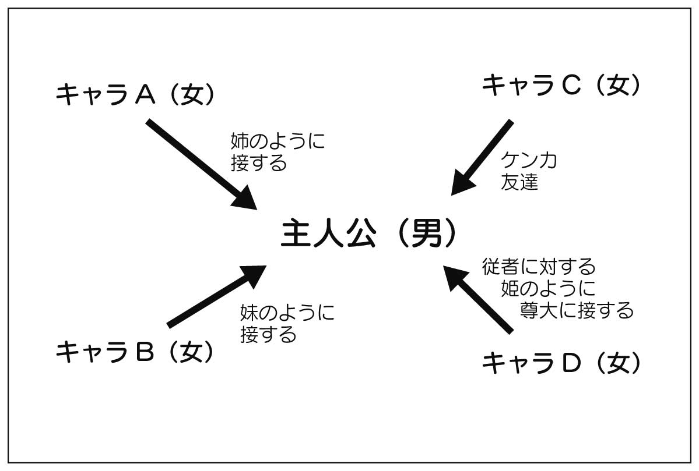
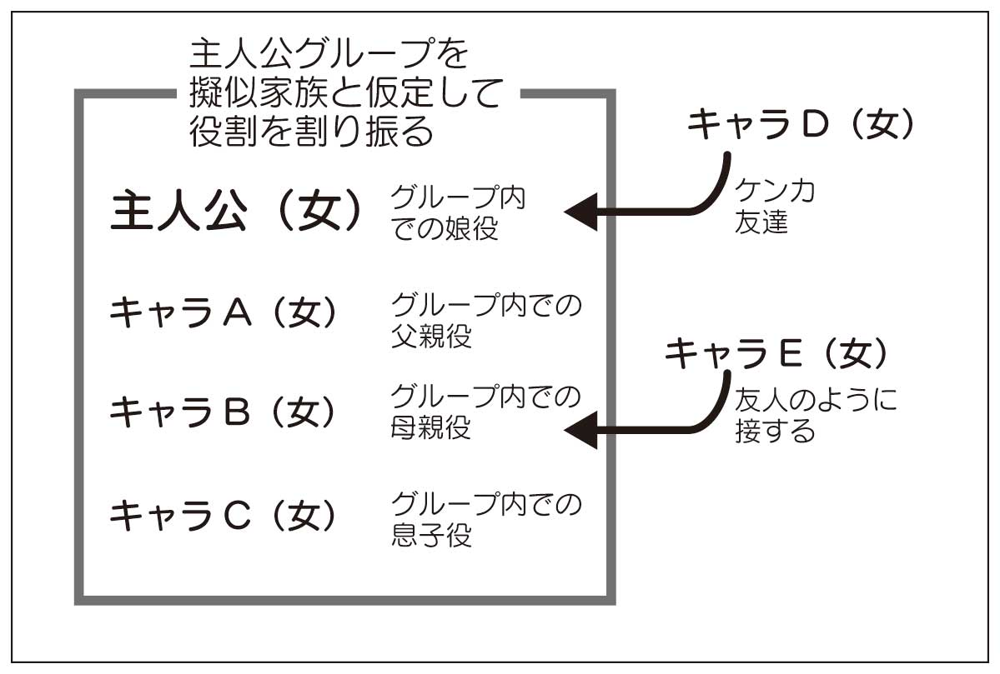

🏠
日
月
縦書き／横書き
| ぶっちゃけすぎのライトノベル執筆講座 本当に書く人に伝えたい二〇の秘訣 |
| 都築由浩 |
| upsidedown (2013) |
|
ぶっちゃけすぎの
ライトノベル執筆講座
本当に書く人に伝えたい二〇の秘訣
都築由浩
UpsideDown
はじめに 〜こんな本、要らない〜
世にはライトノベルの書き方本があふれています。
ライトノベル作家を目指すことを
標榜した学校もたくさんあります。
しかしそれらは本当に役に立っているでしょうか？
この本は、そんな疑問からはじまっています。
ライトノベルの書き方本は私自身それなりに読みましたがその中には首をかしげざるを得ないものがいくつもありましたし、学校では
稀に「ライトノベルなんかコンピュータで文字打てれば誰でも書けるだろ」と言わんばかりの講師が見受けられるのが実情です。（そしてそういう講師は例外なくライトノベル作家ではありません）
そもそも現在のライトノベル作家の多くはそれらの本も学校もなかった頃から書いているわけで、本だの学校だのなくてもライトノベルを書くことも売れることもできるし、実際に学校を卒業してデビューした人たちだって、その多くは「学校がなくてもデビューできたろう」という人がほとんどです。
そんなわけで私はこう思っているのです。ライトノベルの書き方本なんかいらない。そんなものがなくともデビューする人はするし、あっても書けない人はいつまでも書けない。「書き方本」を読む暇があったら、小説でも映画でもエンターテインメント作品にたくさん触れるほうがよほど勉強になる、と。
それでも、投稿作の印象がよくなる「小学校で習う文章の書き方／原稿用紙の使い方」レベルの知識や、小説や映画など既存の作品に触れて自分の創作に役立てるにはどのように読んだり観たりすればよいか、みたいなことを書いた本を作っておく必要はあるだろうと、これを書くことにしたのでした。驚くべきことに、私が読んだ多くの「書き方本」にはそんなことも記されていなかったのですから。
現在、ライトノベル作家としてデビューする方法は、ほぼ「各社の新人賞に応募する」以外にありません。
読者の中には実際にすでに応募経験がある方もおられるでしょう。
そんな方は、少なくとも本書の第三章第五節『小説を書く上でのお約束』と第三章コラム『小説を完成させる』の二箇所だけはチェックして、
騙されたと思って実践してみて下さい。これらはプロの作家であればそれこそ息をするように自然にやっていることで、これをやるだけで作品は驚くくらい読みやすくなります。
特に、一次選考は通過するけど二次から先に進めない......という方、あなたにはおすすめです。
キャラクターとストーリーは不可分
一つの作品の中で、キャラクターとストーリーとは本来不可分なものです。つまり、キャラクターはストーリーに依存するし、ストーリーはキャラクターがいないと進みません。それなのに本書を含めた多くの「小説書き方本」で、キャラクターとストーリーは分けて論じられています。
これは、そうしないと話が混乱してしまうからに過ぎません。
本書でもキャラクターとストーリー、それぞれの作り方を章を分けて書いていますが、実際にはその双方を行ったり来たりして考えるべきものです。
第２章の最初の項「ストーリーを組み立てる順序」の中で、ストーリーを作る方法の最初の段階として「着想」を上げています。
この「着想」はストーリーを思いつくきっかけのようなもので、そこには「書きたいシーン」や「描きたい世界観」と並んで「登場させたいキャラクター」を上げています。つまり、ストーリーを作るのに先立ってキャラクターが出来上がっている場合もあるのです。逆に、キャラクターよりもストーリーの中の１シーンやその作品の世界観が先にあることもあります。
このように、最初の思いつきはキャラクターなのかストーリーの部品なのか、それは作家によって──あるいは作品によって違います。
そこからストーリーを組み上げるにあたって、ある時は「こんなキャラクターを出したい」からエピソードを作ることもあれば、「こんなストーリーならこんなキャラクターが必要」とストーリーの都合でキャラクターが生まれることもあります。
つまりキャラクターとストーリー、どちらが先ということはありません。本書で第１章をキャラクターに割いたのは、単に「ライトノベルではとにかくキャラクターの魅力を前面に押し出した方が売れる」という事情でしかありません。
ですから本書では、第１章のキャラクターの作り方の文中にでも「これはストーリーの作り方にかかわることですが」などと断って、双方を行ったり来たりしながら説明いたします。
最終的に出来上がった小説の中では、全てのキャラクターとストーリーが複雑かつ有機的に絡みあい、再び二つに分けることは不可能──という風になるのが理想です。
キャラクターとストーリーとは、一緒には考えられないから分けて作るけれど、最終的には
渾然一体となる。
このことは心がけておいて下さい。
キャラクターの動機を理解しよう
物語には主人公が必要です。
群像劇のように複数のキャラクターが主人公に近い活躍をする物語はありますが、それでもその中の一人が明確な主人公として働くものです。
主人公はその「最初の動機」で物語を動かしはじめ、物語のラストでは主人公の自発的な行動によって物語が結末に導かれるのです。
第２章『ストーリーの作り方』で詳しく述べますが、ストーリーを作りはじめるために最低限必要なのは主人公の設定と動機だけで、他のキャラクターについては「場合によっては必要になる」程度のこと。主人公の立場は、それほど大きいのです。
主人公の設定は大事ですが、それと同じくらい「動機」も大事だということも、覚えておいて下さい。
「動機」とはそのキャラクターがなにをしたいのか、行動の目的はなんなのか、ということです。主人公に限らず主要なキャラクターには全部「動機」を設定しましょう。
これが決まっていれば、特定の状況下でそのキャラクターがなにをするか、だいたい決まってくるというもので、逆に特別な理由なくこの「動機」に反するような行動をとらせてしまったら、読者にそのキャラクターが「立っていない」と感じさせてしまいます。
特に主人公の動機はストーリーを進行させる動力源のようなものですので、非常に重要です。
主人公に限らず、キャラクターの動機はストーリーの途中で変化しても構いません。あとで説明しますが、特に主人公に関しては動機が変わっていくほうがいい場合が多いです。
また「今のままの生活をずっと続けたい」というのもキャラクターの動機としてあり得ます。なにも「〜になる」とか「〜を〜にする」とかいう何らかの状態を変えることだけが動機ではありません。
注意しなければいけないのは、表面上の動機（口に出している動機）と実際の動機とが違う場合があるということです。
たとえば、口癖のように「人生で一番大事なのはカネ。金儲け大好き！」と言うキャラクターがいるとします。実際、主人公たちがなにか事件を解決する度に、その解決によって利益を得る人に金をせびったりするキャラクターです。
このキャラクターの表面上の動機は「お金を稼ぎたい」ということになりますが、条件として「非人道的なことをしてでもお金を稼ぎたい」なのか、それとも「人の役に立ってお金を稼ぎたい」なのかによって行動が違います。前者の場合は機会があれば泥棒でも強盗でもするかもしれませんし、後者の場合は「お金さえあれば生命の危機を脱することができるキャラクター」がいれば悩んだ末に自分のお金を差し出してしまうかもしれません。
つまり後者の場合、表面上の動機が「お金を稼ぎたい」であっても、実際の動機は「人の役に立ちたい」だったりするわけです。
この表面上の動機と実際の動機のギャップは、キャラクターを立てるためにも使えるし、演出のしようによってはこれだけでエピソード一つ組み立てることもできます。
ただしそれも、作者が「動機と実際の動機のギャップ」を認識できていればの話です。
さて「主人公の動機は途中で変わった方がいい」という話です。
よく「若年層向けのストーリーでは主人公は成長するのがいい」と言われます。
この場合の「主人公の成長」というのは、身長が伸びることでも、まして女性キャラのバストサイズが大きくなることでもありません。もちろん「精神的な成長」のことを言っています。
しかし、具体的に主人公が成長したことをどうやって表現すればいいのでしょうか？
これは第２章の『ストーリーの作り方』で詳しく解説しますので、ここでは簡単に。
主人公の最初の動機として「比較的簡単にかなう個人的な願望」を設定します。たとえば「なんの特技もないけどなにか部活をやりたい」とか、「田舎に住んでいるけど都会に出たい」とか。
ストーリーの冒頭でその願望がかなうのですが、そうすることで新しい動機が生まれます。この動機は「他者から与えられた、個人的ではない目標」にするのがいいです。「（部員から頼まれて）入部したクラブが廃部になるのを防ぐ」とか「（救難信号を聞いて）囚われているお姫様を救出する」とかですね。
それなりのクライマックスを経て、主人公の第二の動機も達成されます。そうすることで、第三の動機が表面に浮かび上がってきます。この最後の動機は「自分から望んだ、個人的ではない、（それまでに達成した動機に比べて）容易でない障害を乗り越える目標」にします。前の例の続きを書くと「後輩と一緒に出演する高校最後のイベントを成功させる」や「敵の秘密兵器を破壊する」ということになります。
動機の変化が「比較的簡単にかなう個人的な願望」から「他者から与えられた個人的でない目標」になり、さらに「自分から望んだ、個人的でない、容易でない障害を乗り越える目標」へと変化しているわけですが、これが「成長」を表現しているのです。
お気づきかもしれませんが、文中の二種類のサンプル、前者が『けいおん
!!』、後者が『スター・ウォーズ エピソード４ 新たなる希望』の分析になっています。このように、既存のヒット作（不人気な作品を分析するのは無駄とは言いませんが、売れる作品を書きたければ売れている作品から学ぶのがいいのは明らかです）を分解して自分の創作に生かす方法も、第２章『ストーリーの作り方』の中で詳しく扱います。
各キャラクターの動機を明確に掴んでおくことで、執筆中あるいはストーリーを組み立てている時に「この状況ならこのキャラクターはこう動く／発言するはずだ」という基準がはっきりし、ストーリーの都合上その動機に反する行動を取らせなければならない場合にはなんらかの理由をつけなければいけないという判断基準にもなります。
読者の側からすれば、作者ほど明確にではなくとも、それとなくその時そのキャラクターがなにをやろうとしているのかは感じとっているものです。キャラクターがその読者のイメージに反した行動を取ると、感情移入できなくなったり、ストーリーの世界に没入できなくなったりします。そうならないためにも、主要なキャラクターの動機は明確に掴んでおきましょう。
自分をどう呼ぶ？ 相手をどう呼ぶ？
すべてのキャラクターには「自分自身をどう呼ぶか」を設定しましょう。「私」や「俺」といった自分自身を呼ぶ言葉を、「一人称」と言います。案外これでキャラクターを表現できるものなのです。
次表のように「自分をどう呼ぶか」だけで、そのキャラクターがその世界の中でどういった社会的な立場を持っているか、読者に示すことができます。
| 男性 | 女性 | | | 男性 | 女性 |
|---|
| 通常 | わたし
私 | わたし
私 | 幼い | （自分の名前） |
|---|
| きさく | 俺 | あたし
あたい
うち | 若い | 僕 | あたし |
|---|
| 上品 | わたし
私 | わたくし | 年寄り | 儂 | |
|---|
| | | 職業的 | 自分（軍人）
拙者（侍） | 自分（軍人）
妾（姫様・花街） |
|---|
それだけでなく、自分を呼ぶ時に独特な言葉を使わせることで、地の文で「〜が言った。」という風に誰のセリフかを地の文でいちいち示さなくても誰がしゃべっているかを読者に伝えることができるので便利です。
といってもやりすぎると読者が混乱するので、独特な一人称を使わせるのは主要なキャラクター二人くらいまでにとどめた方がいいでしょう。それ以外は、男性なら「わたし／私」「俺」「僕」、女性なら「わたし／私」「あたし」くらいから選ぶのが無難です。（もちろん、あえて逆にほとんどのキャラクターに独特な一人称を使わせることもできますが、それならそれで必然性のある理由やストーリー上の設定が必要になります）
表に書いた以外にも、方言や職業から来る一人称がたくさんあります。それぞれキャラクターに応じて調べて下さい。
「自分」という一人称はなにも軍人に限ったことではなく、ミリタリーマニアであれば自分を軍人と見立てて「自分」と名乗ることはあり得ます。他の職業でも同じように「あこがれの職業で使われる言葉を真似して使っている」という設定で、思い込みの強いキャラクター性が表現できます。いろいろ調べてみましょう。
現実の世界では、状況によって一人称がかわります。
普段は「俺」と名乗っている人物が、仕事などの格式張った場では「私」と言うような場合です。
しかしフィクションの世界、とくにライトノベルでは、読者の混乱を招きかねないので、できるだけ一人称は統一するようにしています。
同じように、登場するたくさんのキャラクターがお互いをどう呼ぶかによって、それぞれのキャラクター間の力関係や気持ちを表現できます。特に登場するキャラクターが多い場合、これは表を使って管理するのがいいでしょう。
| Ａ（男） | Ｂ（女） | Ｃ（女） | Ｄ（男） | Ｅ（女・教師） |
|---|
| Ａ | 俺 | （姓） | （姓）くん | （姓） | （姓）くん |
|---|
| Ｂ | （姓）さん | わたし | （名） | （姓）さん | （姓）さん |
|---|
| Ｃ | （名） | （名） | うち | （名）さん | （姓）さん |
|---|
| Ｄ | （あだ名） | （名）くん | （名） | 僕 | （姓）くん |
|---|
| Ｅ | （名）センセ | （姓）先生 | （姓）先生
（名）ちゃん | （姓）先生 | 先生（生徒に対して）
私 |
|---|
この表は「高校を舞台にしたライトノベル」を想定して適当に作ったものです。
表の（）内には、それぞれのキャラクターの姓名のうちどちらか、またはニックネームが入ります。
表の横軸方向に見ると、ＡはＣを下の名前で呼び捨てにしていることがわかります。ＥはＡ〜Ｄが通う高校の先生ですが、Ａだけは表記をカタカナにして「＊＊センセ」と呼びます。
また女生徒Ｃが先生のことを「下の名前＋ちゃん」と呼ぶことになっていますが、これは先生に面と向かわない場面での、女子間での先生のあだ名のようなものだと考えればいいでしょう。つまり、Ｂ以外のクラスの女生徒は全員「＊＊ちゃん」というあだ名で呼んでいるんだろうな、と思えばいいのではないでしょうか。
それぞれグレー背景の部分は「自分をどう呼ぶか」が入っています。
どうでしょう。これを見るだけでなんとなくキャラクターの相関関係が見えてくるでしょう。
つまり逆に言うと、作中で、あるキャラクターが別のキャラクターを呼ぶ時に使う言葉が突然理由もなく変わると、読者を混乱させることになります。前述のような表を作るのは、そこを間違えないようにするためでもあるわけです。もちろん、作中でなにか大きな事件があってキャラクターの相関関係が変わり、そのために呼び方が変わることはあり得ます。
キャラクター間の関係で主人公を引き立たせる
第二節『キャラクターの動機を理解しよう』で書いたように、主人公は動機でも行動でもその物語の主人公であることがわかります。
ですがここでは、キャラクターの配置で明確に主人公を示すことを考えます。これは同時に主人公以外のキャラクターの描き分けの問題でもあります。
それなりの長さを持ったストーリーであれば当然主人公以外の登場人物がいます。たとえば人間が一人きりで、その他はロボットだったり動物だったりする場合でも、主人公とコミュニケーションし読者になんらかの感情を起こさせるのであれば、それはキャラクターと見なせます。
たくさんのキャラクターの中で主人公を際立たせるために、人物相関図の中心に主人公を配置します。

この他の主要キャラクターは主人公の周囲に配置し、それぞれ中心の主人公に向かって一方通行の矢印を描きます。
それぞれの矢印に対して「そのキャラクターが主人公にどのように接するか」を考えます。
たとえば主要キャラクター全員が高校のクラスメイトのような場合でも、「姉のように」とか「妹のように」などで構いません。「けんか友達」や「親友」等の場合は矢印が両方向になることもあるでしょう。このあたり、前節「二人称で表現するキャラクター間の関係性」の項とも関わってきます。
こうやって人物相関図の中心に主人公を配置することで、それぞれのキャラクター同士がコミュニケーションしている描写一つ一つをもって「主人公がこのグループの中心」であることが表現できます。
ちなみに主人公以外の間、すなわち図でいう「キャラＡ」と「キャラＣ」の間にやりとりが全くないわけではありません。もちろんこのキャラクターの間でも会話があるわけですが、この場合も「主人公に対して姉のように接するキャラＡと、主人公のケンカ友達のキャラＣ」の会話になり、直接の会話でありながら間に主人公が介しているかのような人物関係が表現されます。
図ではいわゆる「おちもの」「ハーレムもの」の人物相関図のようですが、筆者がこの手法に気がついたのは『美少女戦士セーラームーン』でのことでした。
最近よく使われるまったく別の考え方として、グループで主人公というのがあります。従来の群像檄とも、チームものともちょっと違うパターンです。

この場合もグループの中にちゃんと一人の決まった主人公がいるのですが、ストーリーの要所要所を除いては四人から五人のグループ全員が主人公であるかのように、それぞれのエピソードが組み立てられているというものです。
グループ内のキャラクターは、全員が女子高生であっても、それぞれ疑似家族構成に従った役割を持ち、グループ以外のキャラクターはグループ内のキャラクターのどれかひとりに対してどう接するか、で描き分けられます。
このパターンのキャラクター配置──特にグループが疑似家族になって各キャラクターが役割分担をしている作品では「各キャラクターの本来の両親がほとんど出てこない」という傾向があります。おそらく、疑似家族と本当の家族とでキャラクターの対応が近くなってしまい、読者の混乱を招くと考えられているのでしょう。
これら、「主人公に対してどう接するか」「グループの中でどんな役割を負うか」は、どちらも次の節で解説する「キャラクターの設計」に深く関わってきます。
つきつめればギャップ萌え
前の節では「物語の中のキャラクターの役割」を考えましたが、こんどはキャラクター単体、それもライトノベルには不可欠な萌え要素について考えます。
「ツンデレ」「ドジっ娘メイドさん」「なんでもできる完璧超人だけど虫とか幽霊は超苦手」など、よくある萌えキャラのパターンの多くは「ギャップ萌え」に集約できます。
- ●ツンデレ
- 主人公に対する接し方が「ツン」すわなち高慢で高飛車から「デレ」つまり照れというか甘えを見せる──というのがギャップを生んでいます。
- ●ドジっ娘メイド
- メイドさんだから本来手際よく仕事をこなすべきところ、本人の属性として「ドジ」でミスをしてしまう──というギャップです。
- ●完璧超人だけど超苦手なものがある
- 普段は何事もクールにこなすのに、苦手なものの前ではうろたえたり叫んだりするのがギャップです。
というところですね。
そのギャップは次のように「設計」します。
まず、ストーリーや最初の思いつきから、そのキャラクターのストーリーの中での社会的特徴を考えます。「社会的特徴」とは、主人公周辺のグループを擬似的家族と考えた場合に父親のような役割がある場合、そのキャラクターが女子高生であったとしても「父親役」とします。
その上で、キャラクターの特徴をいくつかの要素にわけた次の表で、その社会的特徴のイメージに合わないキャラクター設定を一つ盛り込むのです。
- ●社会的特徴
- 性別・地位・先輩後輩・親の職業・年齢も含む。
- ●外見的特徴
- 身長・体型・話し方・名前も含む。
- ●性格的特徴
- 攻撃的・内向的・人見知りなど、一般的に言う性格のこと。
- ●精神的特徴
- 他者／環境に対してどういう態度で接するか。
- ●嗜好的特徴
- 「可愛いものが好き」とか「ゴスロリ好き」とか。逆に「虫が怖い」「幽霊が怖い」とかも。
- ●動機的特徴
- そのキャラクターが何をしたいか、行動の基準になる目標のこと。
たとえば女子高生で作中の役割が「父親役」のキャラクターの場合。
父親役と言えば次のようなイメージですね。
- ○社会的特徴
- 父親役 学校の成績は中の上
- ○外見的特徴
- 身長：高い 話し方：男っぽく落ち着いている。
- ○性格的特徴
- しっかりしている。勉強を教えるのが上手い。
- ○精神的特徴
- 落ち着いている リーダーシップがある。
- ○嗜好的特徴
- 勉強（仕事）が好き。無趣味。怖いものはない。
- ○動機的特徴
- 主人公を取り巻くグループ全体で仲良く過ごしたい。
この中で、ストーリー上、あるいは初期の設定上動かせない項目があるでしょう。それを固定し、残りの中からどれかのイメージを逆の属性にします。
この場合は例として『嗜好的特徴』の「怖いものはない」の部分を「虫や幽霊を極端に怖がる」にしてみます。
おっと、これは『けいおん！』の澪ちゃんですね（笑）
このようにしてキャラクターのギャップを「設計」するのです。
キャラクターデザインを知ろう
これはマンガ、アニメ、それにゲームの世界での常識ですが、イラストが重要視されるライトノベルの世界でも参考になることが多いのでコラムとして掲載することにしました。
色でキャラクターの性格を表現すること。これが非常に重要です。
テレビの戦隊ものやプリキュア、あるいはその源流となったセーラームーンなどをみればわかるように、色によってキャラクターの性格を表現することができます。
- 赤色
- 情熱的・攻撃的・熱血漢・反抗的
- 青色
- 知的・静か・おとなしい
- 緑色
- 調和を重んじる・守備的・あるいは若い・未成熟
- 黄色
- 明るい、軽快、
- ピンク
- かわいい。幼い。
- 白色
- 清楚・清純・純粋、高貴、男性の場合：格好いい
- 黒色
- 悪、女性の場合：色っぽい
などです。小説では、これらの色を「キャラクターの好きな色」として設定する、あるいはキャラクターの服装や特徴づけるための小物、アクセサリーなどがこの色であると描写するなどして使うことになるでしょう。（同時にカラーイラストでもそのように描かれるでしょうし）
特に初登場シーンでこれらの色を読者に提示することで、そのキャラクターの第一印象を方向付けることができます。
絵で表現する場合にキャラクターデザインの面で色と同時に重視されているのが、キャラクターのシルエットです。
「つり目で気が強いことが表現できる」というのはマンガの世界では古くから使われていた方法ですが、今ではこれに加えて、「キャラクターごとにシルエットを変えることで見分けやすくする」ことが求められています。
極端なのがプリキュアシリーズで、各番組ごとに登場キャラクターのシルエットが全部変えてあるのは当然として、プリキュアでは番組をまたいで「プリキュア全体として」同じシルエットにならないように配慮されています。
試しに歴代プリキュアすべてを影絵のようにシルエットにして並べれみても、どれ一つとして同じものはありません。それぞれの番組を見ていた人であれば、自分の知るプリキュアがどれであるか、見分けられるようになっています。
ライトノベルには当然のようにたくさんのイラストが付きますから、文章でもこの点に注意した方がいいでしょう。同じツインテールにしても長さや分け方が違う、というような描写を入れるのです。
細かいことですが、「神は細部に宿る」といいます。こうしたところを押さえておくことで、投稿作品の印象が違ってくると思います。
ストーリー作りのとっかかり
ストーリーを作るといっても、いきなりあらすじの状態で出来上がるものではありません。基本的には思いつきに近いアイデア＝着想からはじまって、それを発展させ、構成を考えて、あらすじ＝
梗概へと組み立てていきます。
本書では、この「着想」の部分は書きません。
ここは各自が書きたいものを考える部分だからです。
ただ一つだけ、着想はあらゆるものから起こりうる、ということだけを書いておきます。
それは「こんなキャラクターが登場するお話を書きたい」かも知れませんし「こんなシーンを書きたい」かも知れませんし、あるいは「こんな世界観のＳＦを書きたい」かも知れません。
これがすべてのストーリー作りの起点であり、また途中で変えることのない核でもあります。
着想が浮かんだら、それをストーリーへと発展させます。
ここでは、次のようなシーンを着想したことにして、話を進めます。
どういう事情でかわからないけど本が燃やされている。そこにどういう設定かわからないけど焚書に反対する女子高生が叫んでいる。
「本だって人間です！」
かなりヘンテコなシーンですが、面白そうなのでいいでしょう。元ネタは東宝特撮映画『サンダ対ガイラ』をパロディにしたあさりよしとおさんのマンガ『ブルーサンダ対レッドガイラ』の「ヘリコプターだって人間です！」というセリフだったりします。ちなみに、そのままのセリフではないしシチュエーションもぜんぜん違ったものになるのでこういうのは「パクリ」とはいいませんよ。
さて、これをストーリーに組み立てるわけですが、とりあえず叫んでいる女の子を主人公として、その設定を考えてみます。主人公のキャラクター設定が決まらないとお話はできませんからね。
ライトノベルなのでこの「女の子」は女子高生ということにしましょう。そしてこのシーンから、本をとても大事にしている女の子だということがわかります。本をつい「人」と
喩えてしまうくらいに。
となると、やっぱり図書委員ですね。でもここは、第１章で説明した「最初の動機」を「図書委員になりたい」にするために、新入生ということにしましょう。どうせなら舞台はちょっと古風な図書館のある女子校に。個人的な趣味で（笑）
外観は清楚系の黒髪お下げにメガネ......図書委員の典型ですが、着想の叫ぶシーンの行動からするとギャップがあって、とりあえずこれでいいかな。
では、本を燃やすような事情、あるいは世界観というのはなんでしょう？
- なんらかの宗教／思想に反する書物が、公的な命令により燃やされている。
- 燃やしている人物／団体にとって都合の悪い書物が、個人的事情により燃やされている。
- 人間以上のなんらかの脅威に対抗する／脅威から身を守るために本が燃やされている。
これは『テーマ』にかかわる問題です。
テーマとは「着想」とはまた違い、この物語をもって読者に何を伝えたいか、ということです。
それは直接描写する場合もしない場合もありますが、たとえば「表現の自由を守る」というようなテーマを扱いたい場合であれば、一番最初の案を採用するのが一番直接的にそれを表現できるだろうし、「不可能と思える困難にもあきらめずに立ち向かえばうまくいく」ことを表現したければ一番最後の案がいいでしょう。
たとえばこれらの案のどれを選ぶかにはまったく関わりのないテーマを設定することもできます。「主人公とヒロインの愛情を描く」でもいいのです。
また同時に、これは尺（物語の長さ、もっと具体的には原稿の量）に関わる問題です。この世界観の設定次第で、ストーリーが壮大になりかねませんから。
本書では、ライトノベルの章に応募するのをぼんやりとした前提としていますので、原稿用紙二〇〇〜三〇〇枚くらいを想定しましょう。詳しくは第３章『小説を書く』のところで説明しますが、この量は通常の文庫本一冊の量と同じです。
というわけでここでは「人間以上の脅威に立ち向かう勇気」をテーマに、最後の案「人間以上のなんらかの脅威から身を守るために本が燃やされている」を選ぶことにします。主人公は「身を守るのではなく、対抗する」ことを訴えて、本を燃やすことに反対する──という展開ですね。「人間以上の驚異」はとりあえず地球外知的生命体＝宇宙人にしておきましょう。
ここまで決まったら、やっと「お話を作る」段階です。
慣れてくるとこの辺りで勝手にざっくりしたストーリーの断片のようなものができていたりするのですが、そういうのがまだない場合、私は「一行で超おおまかなストーリーを書いてみる」ということをやります。
それに必要な要素は三つ。
- 主人公の最初の動機または特徴
- これは「最初の動機」が「図書委員になりたい」だとすでに決めました。
- 本編で何を描くか
- ここは「地球を侵略してきた宇宙人から身を守るために行われる焚書を止めて」ということになりますね。
- 主人公は最終的に何を成し遂げるか
- 宇宙人を撃退する。
図書委員になりたい主人公が、地球を侵略してきた宇宙人から身を守るために行われる焚書を止めて、宇宙人を撃退するお話
おや、うまいこと「着想」になった「
焚書に反対する女子高生が叫ぶ」シーンが入っていますね。実際には「着想」の部分がこの「一文のストーリー」に入っていなくても構いません。最終的な作品の中にそれが入っていればいいので。
ここまでできれば次はこれを文庫本一冊分のあらすじへと発展させていくのですが、その前に、次節では既存の映画のストーリーを分解して「ストーリーの構造とはどういうものか」を考えてみましょう。
これは、本や映画など既存の作品に触れる時に、どんなことを考えていると効率よく自分の創作に生かすことができるか、ということにも通じます。
大ヒット映画を分解してみよう
ちょっとここで休憩して、二つの大ヒット映画のストーリーを分解してみましょう。
二つの映画とは、『スター・ウォーズ エピソード４ 新たなる希望』と『アバター』の２作品です。
どちらもそれまでの映画の壁を大きく破って大ヒット、公開当時の歴代興行収入記録を塗り替え、後の映画に多大な影響を及ぼした作品です。
もし未見でしたら、ぜひ一度ご覧下さい。
ちなみに『スター・ウォーズ エピソード４ 新たなる希望』は、名前は「エピソード４」になっていますが、『スター・ウォーズ』シリーズの中でこれが最初に公開され、その大ヒットを受けて「エピソード５、６」そして「エピソード１〜３」が制作された作品ですので、これだけ単独で見ても十分楽しめますから、ご安心下さい。
まずは第一章第二節『キャラクターの動機を理解しよう』で少し触れた『スター・ウォーズ エピソード４ 新たなる希望』について分解してみましょう。
実は、ハリウッド映画はその多くの作品が「三幕八場」というストーリー構成に沿って作られています。
| 第一幕 | 一場 | 逃げる小型の宇宙船。追う大型宇宙戦艦。姫がロボットになにごとかを命じ、二体のロボットだけが脱出。姫は敵に捕まる。逃げ出したロボットは辺境の惑星に着陸、現住生物に捕まって中古ロボットとして売りに出される。 |
|---|
| 二場 | 辺境惑星の田舎住まいに不満を持つ主人公ルークが買った中古ロボットが、誘拐されたお姫様からオビ・ワン・ケノービ宛の救援を求めるメッセージを再生する。帝国軍に育ての親を殺され、ジェダイの騎士になる決意をしてオビ・ワンと共に行動することに。 |
|---|
| 第二幕 | 三場 | オビ・ワンと共に宇宙港のある都市へ。自称「宇宙最速の宇宙船」の船長ハン・ソロと出会い、同盟軍の惑星に出発。 |
|---|
| 四場 | 目的地に到着するが、惑星は破壊されていた。帝国軍の宇宙要塞デス・スターに遭遇。拿捕されるが、ルーク達は敵の目をくらまして潜入に成功。 |
|---|
| 五場 | 同じ要塞の中に姫が囚われていることを知り、助けに行く。 |
|---|
| 六場 | ルークは姫を助け出すが、オビ・ワンはダース・ベーダーに殺される。お姫様を救出し国に送り届ける。 |
|---|
| 第三幕 | 七場 | ルークは志願して大量破壊兵器の攻撃隊に加わる。一度は同盟軍を離れたハン・ソロだがルークのピンチに戻ってきて助ける。ルークが宇宙要塞を破壊する。 |
|---|
| 八場 | 主人公は国の英雄として船長と共にお姫様に表彰される。 |
|---|
実際にはこれに「
理力」と呼ばれる主人公の特別な能力が目覚めたり、その理力を操る「ジェダイの騎士」という伝説の戦士達のエピソードが明かされたりと、枝葉の設定があるのですが、大筋はこんなところです。
この「三幕八場」のストーリー構成は、幕ごとの所要時間が全体に対するパーセンテージで決められているのですが、実はこの作品はかなり古いので現在のシナリオで用いられているパーセンテージからかなりずれています。冒頭のストーリー紹介部分が大きいのですね。
その分、今観るとテンポの悪さを感じてしまいますが、この作品も含めたいくつかの「過去の大ヒット作品」が、このあとでやる『アバター』をはじめとする現在の大ヒット映画で使われている「三幕八場構成」のもとになっていることは間違いありません。
さて、ではこの『スター・ウォーズ』の三幕八場のあらすじを、前の節でやったように一文で書いてみると、次のようになります。
田舎住まいに不満を持つ主人公が、誘拐されたお姫様を救出して、最終兵器を破壊して世界を危機から救うお話
これが『スター・ウォーズ エピソード４ 新たなる希望』のストーリーのいちばん骨子になる部分です。
では次に、『アバター』も同じように三幕八場に分解してみましょう。この作品は全体が三時間を超える大長編ですが、ストーリー自体はかなり単純で、そのために史上最高の大ヒット作であるにもかかわらずアカデミー作品賞を取り損ねたとまで言われている作品です。
| 第一幕 | 一場 | 足を怪我して車いすに乗っている主人公、死んだ弟の代わりに、地下資源のある地球外惑星に行くことになる。 |
|---|
| 二場 | 主人公は地球外惑星の現住民『ナヴィ』そっくりの身体『アバター』を与えられる。代償として、ナヴィを今住んでいる集落から追い出すよう、地球軍の大佐に命じられる。 |
|---|
| 第二幕 | 三場 | アバターの身体でナヴィの村に向かうが、途中原生動物に襲われて仲間とはぐれる。ピンチのところをナヴィの女性に助けられる。 |
|---|
| 四場 | 女性と一緒にナヴィの村へ。助けてくれた女性は村の長の娘だとわかる。
ナヴィたちは友好的でないが、ナヴィの文化を学ぶのならと村に住むことを許される。 |
|---|
| 五場 | 最初は村の様子を軍に報告していた主人公、ナヴィの文化を学ぶうちに徐々に自分の行動に疑問を覚えはじめる。
また教師役として一緒に行動しているナヴィの女性とも親密になってくる。
ナヴィたちに戦士として認められる。 |
|---|
| 六場 | 主人公の行動に疑いを持った地球軍がナヴィの集落を襲撃。村の長が死んで集落が奪われる。
主人公はアバターの身体にリンクする装置を奪われ、地球軍の基地内に拘束される。 |
|---|
| 第三幕 | 七場 | 地球人の仲間の協力で基地から脱出した主人公は伝説の偉大な戦士と同じ竜の乗り手となってナヴィ達の信頼を取り戻す。
惑星中の多くの部族を呼び集めて地球軍と対決する。
地球軍の強大な戦力の前に一度は敗れそうになるが、原生動物の群れが反撃に加わって勝利する。 |
|---|
| 八場 | 地球人を地球に送り返す。主人公は今後ナヴィとして生きていくことになる。 |
|---|
アバターは上映時間が長大で要素も非常に多く、この構成表はストーリー上重要なもののみを残して、かなりの情報を削り落としています。
この作品では、主人公の最初の動機こそ「アバターの身体で」という条件付きで実現しますが、二番目の「他人から与えられた」動機は動機そのものが間違っていることがわかって放棄されます。
このように主人公の動機は「実現して次の動機に変わる」場合と「実現しないまま新しい動機に移る」場合とがあります。
では、『アバター』のストーリーも前とおなじように一文で書き起こしてみましょう。
怪我で車いす生活を強いられている主人公が、地球外惑星で新しい身体を与えられて、その惑星の原住民のお姫様と触れあい、地球軍を追い出して原住民の文化を守るお話
この二つの大ヒット作を比較すると、共通のパターンがあることがわかります。
- 主人公の最初の動機は個人的なもので、それは第一幕の終わりに実現する。
- 最初の動機が実現する代わりに、他者から新しい動機が与えられる。
- 二つ目の動機が実現する、又は間違っていることがわかって放棄する。すると、自主的に実現したい第三の動機が現れる。
前述したように、この三幕八場のストーリー展開は、現在ハリウッド映画のシナリオを書く上でのフォーマットになっているものです。従来日本でよく言われている「起承転結」にくらべて
- プロローグやエピローグも含めたストーリー全体をカバーできる。（起承転結の場合は起の前にプロローグがはみ出したりすることはよくある）
- 大きな分割である「三幕」についてはパーセンテージが決まっている。
- 上映時間二時間前後の映画を想定しているので、本一冊の小説とストーリー内の要素の数の案配がいい。
というような特徴があり、あらすじの中にどのくらいの回数、どのくらいの盛り上がりの「見せ場」を入れ込むか、あらすじとして組み終わったストーリーを実際に執筆する前に「どの部分をどのくらいの量で書くか」のテンプレートとして使えます。
さらに、第一幕と第二幕の間を
ＰＰ１、第二幕と第三幕の間を
ＰＰ２といい、ストーリー上の大きな節目であると同時に、ここで「主人公の動機」が変化するのがいいとされています。動機を変化させることで主人公の成長を描く手法は、第一章二節『キャラクターの動機を理解しよう』でも書きましたね。
第一幕
（約25%） | 一場 | 主人公、世界観、現状の紹介と、最初の事件。 |
|---|
| 二場 | 最初の事件に対する主人公の反応。テンションが徐々に上がり、最後に主要な問題が持ち上がる。 |
|---|
| ＰＰ１ | 主人公の動機が変化する |
|---|
第二幕
（約50%） | 三場 | この作品で解決すべきことが提示される。３番目に大きな障害を乗り越える。 |
|---|
| 四場 | ２番目に大きな障害を乗り越える。シーケンスの最後に希望が芽生える。 |
|---|
| 五場 | 小休止。主人公たちキャラクターの内面が語られる。 |
|---|
| 六場 | 最大の障害を乗り越える。だが、要素の最後に新たな問題が持ち上がる。 |
|---|
| ＰＰ２ | 主人公の動機が変化する |
|---|
第三幕
（約25%） | 七場 | 最後の対決。できるだけ意外な（でもちゃんと前半で伏線の張られている）展開があること。 |
|---|
| 八場 | 解決。物語の終了。 |
|---|
次の節では、第一節で作った「一文で表現されたストーリー」を、この節と逆の手順で三幕八場に組み立てていきましょう。
ストーリーを組み立てる
さて、第一節『ストーリー作りのとっかかり』の続きです。
第一節では、次のような一行でストーリーを書き出すところまでやりました。
図書委員になりたい主人公が、地球を侵略してきた宇宙人から身を守るために行われる焚書を止めて、宇宙人を撃退するお話
主人公の最初の動機は「図書委員になりたい」です。普通に考えるととても簡単なようですが、これを
叶えるのにもなにか簡単な障害があった方がいいですね。せっかく「動機」を実現するのですから。
ここでは、主人公が本好きだということから
類推して「メガネ、まじめそう、委員長タイプ」として、この容姿から「委員長に他薦されてしまう。委員長と図書委員は兼務できない」とかでいいでしょう。ここでは「担任に直接申し出てクラス委員を他の人に代わってもらい、図書委員になる」としましょうか。
そして前章で分析した映画のストーリーに沿って、この動機を叶えるために他者から新しい動機を与えられます。これが全編で一番長い第二幕の主人公の動機になります。
二つ目の動機は、クラス委員を他の人に代わってもらう条件として、図書委員の中でもちょっと変わった仕事をさせられる係を押しつけられる......としましょう。二つ目の動機は「他者から与えられた動機」にするのがいいので。
| 第一幕（約25%） | 一場 | 女子校に入ってきた主人公は図書委員になりたい。ところがクラスでの委員を決めるホームルームの最初にクラス委員長を決めようとしたところで、委員長に他薦されてしまう。自薦はもちろん他の他薦もなく、このままではクラス委員長にされてしまって図書委員にはなれない。 |
|---|
| 二場 | 主人公は担任に相談する。偶然にも、担任は図書館担当の教師だった。担任は、ある条件で主人公が図書委員になることを許し、クラス委員長を免除する。 |
|---|
担任から主人公に課された「ある条件」が、主人公の二番目の動機になります。それをここで提示するか、謎としておくかは、演出をどうしたいかによって決めていいでしょう。
前節で分解した三幕形式に沿うなら、ここまでが第一幕。全体量の二十五パーセントになります。
第二幕は主人公が図書委員になって、担任に与えられた「ちょっと変わった仕事」に従事することになります。
遅くともこのあたりで宇宙人の話をしておかないと読者には唐突な印象を与えてしまうので、そろそろ設定を考えましょう。
「宇宙人の命令で焚書させられる」ということは、宇宙人は地球人に命令できる立場にあるわけで、逆にいうと地球人は宇宙人に侵略されて支配されています。
一方でクラス委員長だの図書委員だの日常的な問題が語られているので、宇宙人の支配は圧政的なものではなく、「ときどき妙な指示というか命令が来るけど、日常は現代とあまり変わりない」ということもわかります。
これが「世界観の設定」ということですね。いや、世界観からストーリーを作る場合はもう少しちゃんと設定しますよ。この場合は「シーンから着想」なのでこうなっているだけです。
宇宙人が焚書を命じる理由は、その本の中に自分達にとって不利な情報（弱点？）が書かれているからでしょう。それが最近書かれた本ならば、ストーリーにその作者を登場させることができます。逆に古い本ならばそれが書かれた古代に（ストーリーの中と同じように）やってきた宇宙人が追い払われた記録がある──とすることができるでしょう。
中短編なら単純な後者を選ぶところですが、ここでは長編作品ということで前者を選択しましょう。
さて、ストーリー作りに戻りますか。図書委員になれた主人公の次の行動を考えるところから、ストーリー本筋の導入部へと繋げます。
無事図書委員になれた主人公。図書室に行ってみると、先輩図書委員と司書達が騒然としている。地球をゆるやかに支配している宇宙人から、いくつかの本を燃やせと命令が来たのだった。
すでに他の図書館や書店、出版社などは命令に従って燃やし始めているという。
しかしその本は、この学校の図書館にとっては「卒業生の著書で献本してもらったもの」という特別な本で、なんとか燃やさずに済ませられないか相談しているのだった。
燃やされる本を「現代に書かれた本」と決めたことで、それは世に一冊とか二冊とかの
稀覯書ではないことになり、「ここで燃やしてもよそにある」状況になりました。それを避けるために、「他の本はすでに燃やされてしまった」。この図書館だけが燃やすことを
躊躇した理由として「卒業生の著書」を追加する必要が生まれたのです。
このように、ストーリー作りには「決めた設定に対して矛盾点や穴を埋めていく」作業も含まれてきます。マンガやアニメーションでは細かな矛盾点は絵の力で押し切って読者や視聴者に気付かせないこともできますが、小説は読むのに常に頭を使っているせいかストーリー上の矛盾点を指摘されることが多いです。気をつけましょう。
ここで、担任から主人公に課された条件を決める必要が出てきましたね。「本を守りなさい」にしましょう。ストーリー上は直接的ですが、「宇宙人の命令で本を燃やさなければいけない」ことを知らなければミステリアスな条件なので、これなら第一幕二場のクラス会のシーンで読者に明かしてしまっても演出上の問題はなさそうです。
そうなれば主人公のすることは、とにかく本を燃やすのは保留するよう学校司書に頼んで、卒業生である著者のもとへ行くことです。
作者は怯えていた。最近何度か命の危険を感じる自体があったらしい。その上、自分の書いた本が宇宙人の命令で燃やされているというのだから当然だろう。
しかし彼の書いた本はべつに宇宙人の秘密を暴くとかそういう本ではない。いたって普通の小説。
主人公が作者からそんな話を聞いているところに、またもや作家の命が狙われる。
からくも逃げる作者と主人公。
ここまでわりとトントンとストーリーが進んできましたので、読者に一息ついてもらう意味でもストーリー上の緩急をつける意味でも、少しストーリーをペースダウンして謎解きをしましょう。
この時点で解かれていない謎をリストアップしてどう解決するか考えましょう。え？ ここにいたるまで考えなくていいのかって？ たいていはぼんやりとは考えていますが、まだあらすじ作成中なのでここではじめて考えても問題ないですよ。
- ●宇宙人はなぜ作者の本を燃やしたいのか
- 本の中に自分たちが禁忌にしている言葉が書かれている。宇宙人は古代にも地球に来ていて、この言葉が当時の地球人にバレて逃げ出すことになった。
- ●担任はなぜ主人公に「本を守れ」と言ったのか
- 実は主人公、担任にクラス委員長免除をお願いするとき、作者の書いた別の本を持っていた。担任は実は作者の恋人で、その本を見て主人公を図書委員にしてもいいと思うようになった。
特に前者がいいかげんですが、これはあくまであらすじを作るサンプルなのでこれでいいでしょう。「宇宙人は作者の本の存在自体を消したい」「他にも燃やされる本はあるけど、それほどたくさんではない」「燃やされる本の共通点がわかりにくく、『これが宇宙人の弱点か』と誰にでもすぐみつけられるものではない」という条件を考えて、ひねり出しました。
ここで「担任と作者は恋人」という話が出てきましたので、性別を決める必要に迫られましたね。
ハリウッド映画なら迷わず作者を男性にして主人公とちょっとロマンスっぽい（「担任は恋人」だから不倫じゃないけどそんな感じの）雰囲気を出してくるところですが、ここではライトノベルなのでどちらでもかまいません。ここでは、作者＝女性／担任＝男性にしておきましょう。
後者の謎を明かすのは演出と伏線の関係でここでなくともいい気がしますので、とりあえず今ここに書くのは前者だけにしておきます。
主人公と作者は「なぜ宇宙人が作者の本を燃やせと命令を出したのか？」を調べる。他にも焚書命令が来ている本があるので共通点を調べと、宇宙人の弱点がわかる。
ここまでが小休止で、ここから一気にクライマックスに持っていくわけですが、ここで最初の「着想」になったシーンを入れ込みましょう。今にも焚書されそうなところに主人公が現れて、止めるシーンです。
焚書のタイムリミットが迫る中、主人公と作者はそれをとめようと学校の図書館に向かう。
ところが再び作者を殺そうとする宇宙人の追っ手が現れてなかなかたどり着けない。
すんでのところで主人公が間に合って焚書を止める。
ではこれも、第一幕と同じように各場ごとに割り振った表を掲載しておきましょう。
| 第二幕（約50%） | 三場 | 無事図書委員になれた主人公。図書室に行ってみると、先輩図書委員と司書達が騒然としている。地球をゆるやかに支配している宇宙人から、いくつかの本を燃やせと命令が来たのだった。
すでに他の図書館や書店、出版社などは命令に従って燃やし始めているという。
しかしその本は、この学校の図書館にとっては「卒業生の著書で献本してもらったもの」という特別な本で、なんとか燃やさずに済ませられないか相談しているのだった。 |
|---|
| 四場 | 作者は怯えていた。最近何度か命の危険を感じる事態があったらしい。その上、自分の書いた本が宇宙人の命令で燃やされているというのだから当然だろう。
しかし彼女の書いた本はべつに宇宙人の秘密を暴くとかそういう本ではない。いたって普通の小説。
主人公が作者からそんな話を聞いているところに、またもや作家の命が狙われる。
からくも逃げる作者と主人公。 |
|---|
| 五場 | 主人公と作者は「なぜ宇宙人が作者の本を燃やせと命令を出したのか？」を調べる。他にも焚書命令が来ている本があるので共通点を調べると、ある神社に伝わっていた意味不明の呪文があった。わけがわからないまま、宇宙人はこの呪文を消したいのだという結論に達する。 |
|---|
| 六場 | 焚書のタイムリミットが迫る中、主人公と作者はそれをとめようと学校の図書館に向かう。
ところが再び作者を殺そうとする宇宙人の追っ手が現れてなかなかたどり着けない。
すんでのところで主人公が間に合って焚書を止める。 |
|---|
ここからが第三幕で、すでに「焚書を止める」という第二の動機は達成され、主人公の動機は「宇宙人を撃退する」に変わります。
その具体的な方法をすでに知っている（ここでは「呪文を唱える」になりますね）ことにした方がこの部分のテンポはよくなりますが、ドラマチックな謎解きをやりたければ方法の謎だけはまだ残しておく（つまり「呪文が苦手なのは分かるけど、呪文の意味自体は不明のままだしどうすればいいかわからない」という風に）手もあります。
その「方法」の難易度で使い分けるという考え方もあるでしょう。難易度が高いなら方法を明らかにしておいてその手順を描く。難易度が低いなら、方法を調べるのにタイムリミットを設けるなどして危機感をあおる。という風にです。
この場合は、「具体的な呪文の使い方はまだわからない」として話を進めましょう。
| 第三幕（約25%） | 七場 | なんとか焚書を止めることができた主人公の前に、ついに宇宙人本体が現れる。
主人公に迫る宇宙人たち、確かな使い方が分からないまま、半ばやけになって「呪文」を叫ぶと、宇宙人たちはおびえたように宇宙船に乗って逃げていった。 |
|---|
| 八場 | 大団円。 |
|---|
こうやって書いたものを読んでいくと簡単に組み上がっているように見えますが、実はけっこう苦しんでいます。特に第一の動機を「図書委員になりたい」に設定するところや、焚書の理由を考えるところは数日かかりました。
「担任と作者は恋人」という設定が出てきた時点で、すべてのパズルのピースがスパッとはまるように全体がまとまった感じです。
第三章コラム２『小説を完成させる』でも触れますが、人間は数日あけることでそれまで考えが詰まっていたことを客観視してうまく解決する方法を思いつくものです。一度詰まったからとあきらめず、数日あけてもう一度考える習慣をつけましょう。
この「自分を客観視する」というのは小説を書く上でかなり重要なことですので、是非とも身につけて下さい。
また、思いついたことは「覚えておこう」と考えずに、すぐにメモを取るなりボイスレコーダーに録音するなりして、吐き出してしまいましょう。
個人的な体験からですが、「いいアイデアだから覚えておこう」と思ってからメモにするまでの間、次の「いいアイデア」を思いつかないような気がするのです。たぶん「覚えておこう」の方に頭が行ってしまい、新しいアイデアを思いつく能力が落ちてしまっているものだと思います。
さて、ここまでできればあらすじ作りはほぼ終わりです。次の節に進む前に、ここまでで登場した主要キャラクターについて第一章五節『つきつめればギャップ萌え』に沿ってひとりひとりキャラクターを設計しておきましょう。
伏線と演出メモ
前節までで三幕八場のストーリーが組み上がり、あらすじはほぼ完成したと言っていいでしょう。
たいていの場合はここからすぐに小説を書き始めるのですが、それはここまでストーリーを組み立てた本人ならば組んだストーリー以上のものが頭の中にあるから書けるのです。
本書は「小説の書き方を解説する」わけですから、その「頭の中にあるもの」も説明しておく必要があるでしょう。
それは、この節のタイトルにもなっている「伏線」と「演出」です。
わかりやすいように、前の節で組み立てた三幕八場の表をまとめて掲載します。これは前の節で書いたものそのままではなく、特に第一幕の部分で、二幕目以降のストーリーが決まったために加わった／変更になった部分も含んでいますので、前節に掲載したものから少し変わっています。
| 第一幕（約25%） | 一場 | 女子校に入ってきた主人公は図書委員になりたい。ところがクラスでの委員を決めるホームルームの最初にクラス委員長を決めようとしたところで、委員長に他薦されてしまう。自薦はもちろん他の他薦もなく、このままではクラス委員長にされてしまって図書委員にはなれない。 |
|---|
| 二場 | 主人公は担任に相談する。偶然にも、担任は図書館担当の教師だった。
主人公が学校に持ってきていた本を見た担任は「その本を大事にしなさい」という条件で主人公が図書委員になることを許し、クラス委員長を免除する。 |
|---|
| ＰＰ１ | 主人公の動機：図書委員になりたい→担任からの条件「その本を大事にしなさい」 |
|---|
| 第二幕（約50%） | 三場 | 無事図書委員になれた主人公。図書室に行ってみると、先輩図書委員と司書達が騒然としている。地球をゆるやかに支配している宇宙人から、いくつかの本を燃やせと命令が来たのだった。
なんとその中には主人公が持っていた本も含まれていた。
焚書にはタイムリミットが迫っており、すでに他の図書館や書店、出版社などは命令に従って燃やし始めているという。
しかしその本は、この学校の図書館にとっては「卒業生の著書で献本してもらったもの」という特別な本で、なんとか燃やさずに済ませられないか相談しているのだった。 |
|---|
| 四場 | 卒業生だというその本の作者を主人公が訪ねてみると、作者は怯えていた。最近何度か命の危険を感じる事態があったらしい。その上、自分の書いた本が宇宙人の命令で燃やされているというのだから当然だろう。
しかし彼女の書いた本はべつに宇宙人の秘密を暴くとかそういう本ではない。いたって普通の小説。
主人公が作者からそんな話を聞いているところに、またもや作家の命が狙われる。
からくも逃げる作者と主人公。 |
|---|
| 五場 | 主人公と作者は「なぜ宇宙人が作者の本を燃やせと命令を出したのか？」を調べる。他にも焚書命令が来ている本があるので共通点を調べると、ある神社に伝わっていた意味不明の呪文があった。わけがわからないまま、宇宙人はこの呪文を消したいのだという結論に達する。 |
|---|
| 六場 | 焚書のタイムリミットが迫る中、主人公と作者はそれをとめようと学校の図書館に向かう。
ところが再び作者を殺そうとする宇宙人の追っ手が現れてなかなかたどり着けない。
すんでのところで主人公が間に合って焚書を止める。 |
|---|
| ＰＰ２ | 主人公の動機：担任からの条件「その本を大事にしなさい」＝焚書を止める→宇宙人を撃退する |
|---|
| 第三幕（約25%） | 七場 | なんとか焚書を止めることができた主人公の前に、ついに宇宙人本体が現れる。
主人公に迫る宇宙人たち、確かな使い方が分からないまま、半ばやけになって「呪文」を叫ぶと、宇宙人たちはおびえたように宇宙船に乗って逃げていった。 |
|---|
| 八場 | 大団円。 |
|---|
前節から書き加えた部分に、すでに伏線がいくつか入っています。
第一幕二節の「主人公が学校に持ってきていた本を見た担任は「その本を大事にしなさい」という」の部分は、「その本」が焚書の対象であることが後にわかるという点と、担任が本の作者の恋人だという箇所の二つの伏線になります。
ただ、この恋人関係の発覚はどこでやればいいでしょうか？
四場の主人公と作者が最初に会うところであっさり明かしてしまうか、六場で焚書を止めに向かう主人公と作者に妨害が入るところで助けに来た担任との間のやりとりで明らかにするか、あるいは八場まで引っぱって最後の最後に「実は......」とやるか......。
ここでは恋人関係にあるのが主人公ではないのでラストまで引っぱるのはどうかと思います。といって簡単に明かしてしまうのももったいないので、六場を選択しましょう。刺客の妨害で陥るピンチをより危険なピンチに設定できる点でも「助けに来る」シチュエーションはおいしいですし。
次に「着想」となった主人公のセリフを見ていきましょう。
「本だって人間です！」
かなり珍妙なセリフですので、これはどこかで伏線をはっておきたいですね。（インパクト狙いならいきなり出すのもアリですが、「読者が引く」可能性もありますから）
主人公以外でこんなセリフを言いそうなキャラクターである作者が元ネタであるとするのが自然でしょう。どうせなら、作者のキャラクターを際立たせるために、最初に作中に登場する主人公との出会いのシーンで、作者に言わせるのがいいと思います。
作者の家を訪ねた主人公。部屋中どころか家中が本で埋め尽くされている（実際、多くの小説家がそんな状態です）のを目撃する。廊下から部屋に通されるところで、床から積み上げられている本の山を崩しそうになったところに、作者が言うわけですよ。
「気をつけてね。本も人間なんだから」
もちろんここでは主人公とこのセリフについてのやりとりがあって、作者は本への愛が過ぎて「一冊一冊の本にも魂が宿っている」と考えるようになり、それが「本も人間」という表現で口から出てきたものとわかります。
その考えが頭に残っていた主人公が、六場で焚書を止める時に思わず例のセリフを口走ってしまう......。という展開で。
で、第三章四節『小説の鉄板法則と注意点』で詳しく書きますが、こういうセリフは三回あった方がいいので、もう一度どこかで出したいですね。できればラストでこの本のテーマである「焚書はいけない。本を大事にしよう」ということを読者に伝えるところで、主人公に言わせましょう。「本だって人間だもんね」とか、そういうセリフを。
とまあ、こんな風に伏線というのはあらすじの段階でストーリー上を行ったり来たりしながら考えておきます。何せ自分で考えたストーリーに関することですから、よほど複雑に入り組んだことをしない限り覚えていられますが、前の節の最後に書いた通り、プリントアウトに赤で矢印で示すなどしてメモ書きしておくことをおすすめします。私は前のプロットの途中に（）付きで書き込んでしまうことが多いです。
同様に、重要なシーンの演出についても書き込んでおいた方がいいですね。
演出の目的は読者の感情を動かすことです。感動させるにしても怖がらせるにしても、その方向に感情が動くように計算して演出をします。
ですので、ここで重要になるのはキャラクター設計の時と同じく、ギャップです。
たとえばストーリーの作例の六場、いよいよ焚書のタイムリミットが迫って、宇宙人の弱点のヒントを掴んで、図書館に向かおうとして刺客に襲われる部分、これは緊迫感が欲しいわけで、文章のテンポも早くなります。
ということは、その前の宇宙人の弱点を調べる部分の文章はテンポを緩く、短い作中時間にたくさんの文字を費やしてゆっくりと表現するのです。
そんな風に、その部分を読んでいる時の読者の心理の振れ幅を大きくして、より効果的な演出をします。
またそういうギャップを作る演出を考えて設定を決めることもあります。
宇宙人の設定はここまであまり決めていませんでしたが、七場ではじめて実際に主人公の前に登場する時に「強い」「怖い」を増幅させるような演出をしたいとなった時......
「仰々しい強そうな宇宙船で現れ」→「中から出てきた宇宙人はかなりしょぼい外観で強そうに見えない」→「宇宙人が取り出した武器を
威嚇に発射するとすごい威力」
という風に描写を揺り動かして落差を大きくしてみるといいのです。これはこういう風に設定を変えないとできない演出ですよね。
この場合も、設定した意図をあらすじの七場のところに（）付きで書きこんでおけばいいでしょう。
構成の黄金律
第二節『大ヒット映画を分解してみよう』でも書きましたが、構成には最適な比率というものがあります。観る者、読む者を飽きさせず、最後までストーリーの中に引き込んでいくために必要なテンポです。
私はこれを「構成の黄金律」と呼んでいます。
その比率とは
- 10パーセント
- これは二〇〇ページの本であれば「最初の二〇ページ」にあたります。
ストーリーの最初からここまでに読者に提示しなければいけない情報がいくつかあります。
どんな世界観か
ここでは「現代を舞台にした学園もの」とか「異世界ファンタジー」とか「宇宙を舞台にしたＳＦ」とか、そういう漠然とした世界観のこと。
誰が主人公か
これは「読者が最初に感情移入すべきキャラクターは誰か？」で示すことができます。プロローグ的に冒頭部に主人公が登場しない「事件」を描くことはあります（これは前の「どんな世界観か」を示すシーンになります）が、その場合はそのシーンを全体の五パーセント程度にとどめ、残る五パーセントで主人公を登場させて読者に提示しましょう。
主人公はどんなキャラクターか
これはドジキャラならこの段階でなにかドジをさせる、世話焼きのキャラクターなら誰かの世話焼きをしているところを入れる、などです。主人公キャラのキャッチーなところを前面に押し出すことで、読者をストーリーに引き込む効果があります。
主人公はなにをする人なのか
これは「主人公の初期の動機」だけでもいいし、または「主人公が最後になすこと」を伏線として出しておく方法もあります。ストーリーがどちらに向かって進むのか、読者に道しるべを見せておくという意味です。
- 25パーセント
- これは第二節で説明したＰＰ１ですね。
ここまでに主人公は小さな（ストーリー上の）山を一つ乗り越え、主人公の動機の変化を迎えます。
- 75パーセント
- これも第二節で説明しました。ＰＰ２にあたります。
ストーリーは一旦収束の方向に向かいつつ、しかし主人公には新しい動機が生まれて、最後のクライマックスに突入します。
もちろん尺（ストーリー全体の長さ）の問題でこの通りにいかない場合はあります。しかし、本書で課題にしている「ライトノベルの賞に応募する長編作品で、ほぼ文庫一冊分」であれば、この構成で書くことでストーリーのテンポを維持できるようになります。
つまり、前の節で完成させたプロットを、全体で四〇〇字詰め原稿用紙三〇〇枚の応募用原稿に仕上げるとしたら、次のような量に配分することになります。
女子校に入ってきた主人公は図書委員になりたい。ところがクラスでの委員を決めるホームルームの最初にクラス委員長を決めようとしたところで、委員長に他薦されてしまう。自薦はもちろん他の他薦もなく、このままではクラス委員長にされてしまって図書委員にはなれない。
ここまでを全体の
10パーセント、つまり原稿用紙三〇枚で書きます。もちろん、プラスマイナス五枚くらいの誤差はあるでしょうが、目安として「三〇枚」は常に頭に置いておくようにしましょう。
世界観の説明は間違いなく入ります。
ここに登場しているのは主人公と担任、推薦するクラスメイトくらいですので「主人公が誰か」も問題なく提示することができます。
「主人公はどんなキャラか」を読者に伝える方法を考えるには、第一章五節『つきつめればギャップ萌え』で考えた各要素からキャラクターのどの面がキャッチーかを考える必要があります。
「本好き」を押し出していくのが一番簡単でしょうが、できればつい微笑んでしまうようなエピソードを盛り込んで読者を引き込むことを考えましょう。
最後の「主人公はなにをする人なのか」については、最初の動機である「図書委員になる」が提示されているので大丈夫でしょう。
サンプルのこのお話ではここは偶然「第一幕一場」と一致していますが、二場の途中までがここに入る場合も、逆に一場の途中までしか入らない場合もあります。
主人公は担任に相談する。偶然にも、担任は図書館担当の教師だった。
主人公が学校に持ってきていた本を見た担任は「その本を大事にしなさい」という条件で主人公が図書委員になることを許し、クラス委員長を免除する。（演出メモ：担任はこの本の作者の恋人だが、ここではそれは書かない）
ここまでが全体の
25パーセント。つまり前の部分を抜いたここだけのパーセンテージであれば十五パーセントということになります。
これは第一幕の終わりまでと必ず一致します。
全体が原稿用紙三〇〇枚とした場合の枚数で言うと、最初から七五枚（プラスマイナス五枚程度）でここまでを書き終えなければいけません。
無事図書委員になれた主人公。図書室に行ってみると、先輩図書委員と司書達が騒然としている。地球をゆるやかに支配している宇宙人から、いくつかの本を燃やせと命令が来たのだった。
なんとその中には主人公が持っていた本も含まれていた。
焚書にはタイムリミットが迫っており、すでに他の図書館や書店、出版社などは命令に従って燃やし始めているという。
しかしその本は、この学校の図書館にとっては「卒業生の著書で献本してもらったもの」という特別な本で、なんとか燃やさずに済ませられないか相談しているのだった。
卒業生だというその本の作者を主人公が訪ねてみると、作者は怯えていた。最近何度か命の危険を感じる事態があったらしい。その上、自分の書いた本が宇宙人の命令で燃やされているというのだから当然だろう。
しかし彼の書いた本はべつに宇宙人の秘密を暴くとかそういう本ではない。いたって普通の小説。
主人公が作者からそんな話を聞いているところに、またもや作家の命が狙われる。
からくも逃げる作者と主人公。（演出メモ：ここは次とのギャップのために文章のテンポを早く）
主人公と作者は「なぜ宇宙人が作者の本を燃やせと命令を出したのか？」を調べる。他にも焚書命令が来ている本があるので共通点を調べると、ある神社に伝わっていた意味不明の呪文があった。わけがわからないまま、宇宙人はこの呪文を消したいのだという結論に達する。（演出メモ：ここは文章を特にゆっくりと）
焚書のタイムリミットが迫る中、主人公と作者はそれをとめようと学校の図書館に向かう。
ところが再び作者を殺そうとする宇宙人の追っ手が現れてなかなかたどり着けない。
すんでのところで主人公が間に合って焚書を止める。
ここまでで全体の
75パーセント。最初からここまで、原稿用紙換算で二百二十五枚（プラスマイナス十枚程度の誤差は許容範囲です）ほどを費やします。
なんとか焚書を止めることができた主人公の前に、ついに宇宙人本体が現れる。
宇宙人は仰々しい宇宙船に乗っておどろおどろしく現れ、中から出てきた宇宙人はしょぼい外観で拍子抜けする。しかしかれらが持っている武器で威嚇射撃すると、その威力で後者の一部が消えてしまうくらい超強力。
主人公に迫る宇宙人たち、確かな使い方が分からないまま、半ばやけになって「呪文」を叫ぶと、宇宙人たちはおびえたように宇宙船に乗って逃げていった。
大団円。
小説のラストにあたる第三幕がすべてここに入り、ここがクライマックスです。この部分を全体の
25パーセントで書かなければいけません。もちろん小説の全体の量は応募する賞の規定に合わせなければいけませんから、もしここより前の部分が予定よりも長くなっていたら、この部分はそれだけ短くする必要がありますが、あえて大まかに
25パーセントだけを考えておいて、原稿全体を書き終えてから、全体量を見て文章を削ったり追加して利する方法もあります。
この節では「これだけのストーリーの要素をこれだけの量で書く」ということを決めて、
目安にするんだ、ということを覚えて下さい。
ここまでできれば、あとは書くだけ......ですね。休憩がわりにコラムを二つほど挟んで、次の章に進みましょう。
情報をたくさんインプットしよう
ライトノベル作家として原稿を書き続けるのは、ある種「血を吐きながらマラソンを走り続ける」のに似ています。
自分の中にどれだけのネタやパターンの在庫──ストーリーの引き出しがあるかが問われます。
デビュー作一作だけで消えていく作家が驚くほど多いのは、この引き出しが圧倒的に足りないためです。
その引き出しをどうやって増やすか。引き出しの中身をいかに豊かにするか。これは、既存のストーリーをどれだけ自分の中に詰め込んでいるかにかかってきます。
別の言い方をすると、「小説を書く」ということはコンピュータ用語で言えば「
出力する」ということです。
入力がなければ
出力をしつづけることはできません。
だからこそ、「情報をたくさんインプットしよう」ということになるのです。
映画をたくさん観て小説をたくさん読もう
第二節でやったように、映画を観ればそのストーリーを分解し、構成を分析し、それらを自分の中に取り込むことができます。小説を読んでも同じことです。
私はよく、大学の学生相手に「才能がない人でも、小説を一万冊読んだら一〇冊くらいは商業出版レベルの小説が書けるようになるよ。だからといって、五千冊で五冊書けるようになるわけじゃない。まず一万冊から」と言います。
まあ、こんな話を大学生相手にしても、今から一万冊も読む時間はないわけです。小中学校の頃から、図書館の本を棚単位で数えて読み尽くしでもしないかぎりこんな冊数には到達しません。でも、ライトノベル作家として何年も活躍している作家さん達の話を聞くと、みな同じような子供時代を送っているのです。
せめて今からでも、「名作」「傑作」と呼ばれる映画や小説をたくさん自分の中に取り込んでいきましょう。必ずあなたの引き出しを増やしてくれるはずです。
取材に行こう
取材も重要なインプットの一種です。
取材といっても、難しいものではありません。
たとえば、喫茶店のシーンを書くのに、頭の中で喫茶店を思い浮かべるだけでなく、実際に近所の喫茶店に行ってみるとか、そういう簡単なものも含んでいます。
喫茶店といっても、いわゆる日本に昔からある喫茶店と、ちかごろ都会では主流になりつつあるスターバックスカフェのようなスタイルの喫茶店とでは、テーブルにおいてあるもの（普通の喫茶店なら砂糖や塩、紙ナプキンなどがありますが、スタバでは基本的にテーブルにはなにもありません）が違っていたり、そもそもそこにいる人の雰囲気もかなり違います。
そういう、現実に身近にあるものを書く時は、現場で実際に見て感じてから書く方が絶対にいいです。
「普段よく行ってるから、見なくても書ける」
そう思いがちですが、書くつもりになって見るのと漠然と見ているのとではぜんぜん違っていたりしますから、気軽に行ける場所なら行くことをおすすめします。
「わたしが書くのはファンタジーだから、現代日本で取材する必要はない」
というのも間違いです。今の日本でも、取材したり調べたりする場所はたくさんあります。まあ、スタバと違って「気軽に」というわけにはいきませんが。
たとえば中世のお城......というわけにはいかなくても洋館がたくさんある所に行ってみるとか、あるいはゴシック様式を模した建物を調べてみるとか......
教会を描写するにも、古くて大きな教会は十字架をモチーフにした（上から見て十字架の形をしている）建物になっていることがありますが、じゃあキリスト教ではない架空の（十字架でないシンボルがある）宗教の教会がそうしたキリスト教の教会と同じ構造でいいのか......とか、現場で見て、ちょっと調べてみれば疑問も浮かんできます。
宇宙を舞台にした作品を書くつもりなら、JAXAやJAMSTECなどの一般公開イベントに行って宇宙や深海といった極限環境に人や物を送り込む機械を実際に見てくるのは、とても参考になります。
もちろんなにか小説のネタになったり舞台になったりする場所で、現地の詳しい人にお話をうかがうのも大事な取材ですが、プロの作家ならともかくこれから作家になろうという人が取材の申し込みをするというのは、心理的に難しいかと思います。（実際には、ちゃんと調べてきちんと申し込めば受け付けてくれることが多いです）
ただ、そこまでしなくても「取材」はできるし、できる範囲でやった方がいい......ということは覚えておいて下さい。
小説書きに必要な習慣
作家を目指すのなら、いくつかの習慣を身につけた方がいいでしょう。ここには、応募作を書くためのノウハウではなくて「作家を続けるためのコツ」として、私が心がけていることをいくつか書いておきます。
いつでもどこでもメモ
いつでもどこでもメモを取る癖をつける、「メモできる環境を整えておく」のを心がけるのがいいです。メモ帳に書くのでもいいし、最近ならスマホに音声メモで録音しておくというのもアリ。デジカメで説明看板などを（あとで読める画質で）撮影しておくことも大事ですね。
そのときになにを考えてそのメモを書いたのか、何年後に読んでもそれがわかるように、メモの内容を工夫しておくことも重要です。「キーワードだけ書いておけば十分だろう」という考えでは、あとで見た時にたいていメモの意味が自分でも分からなくなってしまいます。
人魚の村でお祭りの日
お祭りでは人魚（女）達がお面を付けておどる。
その年の「あたりお面」があり、それを付けている人魚がその年の主役である。
ヒロインはその年「あたりお面」をつけるはずだったが、なぜかその面はライバルの女の子の手に渡っていて......
これは十年以上前のタイムスタンプがあるアイデアメモのテキストファイルですが、これだけ読んでもなんとなく意味はわかるでしょう。このままでは使えそうにないですが、「あたりお面をつけている女の子がその年の主役になる奇祭」というのは伝奇ミステリで使えそうです。
たとえばこれが
あたりお面の奪い合い。ライバルの女の子の手に渡る
だけだったら、「おまつり」というキーワードが欠けているだけでかなりわかりにくくなってしまいます。
「あとで読んでわかるように」というのはそういうことです。
このメモは、いつでも書けるようにしておくことも大事です。それこそお風呂に入っているときでも、トイレの中でも。
私の場合は寝入りばなに何かを思いつくことが多く、いつも飛び起きて紙のメモにかきこんだり、ｉＰａｄに打ち込んだり録音したりしています。
映画を観るのも勉強
私は映画館で映画を観る時、ストップウォッチを持っていくようにしています。
ラップタイム機能を使って、映画を観ながらストーリーの節目のところの時間を計るためです。
これをすることで、第２章２節『大ヒット映画を分解してみよう』でやったような構成の分析をあとでするために必要な「ストーリー上の各要素の時間」を確認することができます。
実際これまでにいくつもの発見をもたらしてくれた習慣です。もちろん、完全に映画のストーリーに没入して楽しむというわけにはいかなくなってしまいますが、これも勉強だと思って続けています。
調べものはwikipediaで満足しない
最近は大学のレポートなどでよく問題になっているという報道を見たりしますが、小説を書くのにwikipediaを
鵜呑みにするのは禁物です。間違い記述や一方的な思い込み解説がけっこうあるので。
私自身も何カ所か見つけているくらいですから、間違い記述はそうとうあると思っていいでしょう。
ではぜんぜん使えないかというとそうではなくて、調べものの最初の一歩にはいいと思います。
まったく手がかりもない調べものから、少なくとも何をキーワードに調べればいいかくらいの情報は手に入りますので、それをもとにもっと詳しく現地取材するなりできます。
ですから「wikipediaで調べるだけでは不十分」ということだけ、肝に命じておけばいいと思います。
ちょっとした疑問はすぐ調べる
人と会話していてふっと「これってどういう意味だっけ？」とかちょっとした疑問が浮かぶことがあると思います。その場では調べなくても実際にはぜんぜん問題ないとしても、こういうのは簡単に調べる癖をつけるのがいいでしょう。
こういう時ならばwikipediaで調べてもいいと思います。
ちょっとした
蘊蓄を作品の中に入れ込んでおくと読者の知識欲を刺激できていいスパイスになるので、普段の会話でそういうネタを仕入れておいて、実際に作品の中で使うことになったらその時にもう一度詳しく調べるようにするといいと思います。
取材癖
前のコラムにも書きましたが、取材は大事です。
あなた自身が取材対象になるくらい詳しい人ならば、そのジャンルについては取材しなくても書けるでしょう。
それが特定の業界の話ではなくて、たとえば神社とか喫茶店のシーンを書こうとする時に、ちょっと近くの神社や喫茶店を見に行って、そこにあるべきもののチェックをする、そこにいる人のお話を聞いてくる......。そういうことをすると、けっこうな確率で新しい発見に出会えます。
もちろん、小説のメインの舞台やネタについては、できるだけ実際にそこにいる人に話を聞いた方がいいです。「詳細な取材をすることで、想像の範囲が狭まって面白いフィクションが書けなくなる」というような人もいますが、取材をした上でつく〈嘘〉と、知らないで書いてしまう事実誤認とではまったくちがうし、それは必ずといっていいほど読者に見抜かれてしまいます。
文体の人称について
実際に小説を書き始める前に、「このストーリーを書くのに適切な文体の人称はなにか？」を考えます。
「文体の人称」とは、文章が誰の視点で語られているのか、という意味です。わかりやすいようにサンプルで示しましょう。
わたしたちが肝試しをする時には、いつもスタート前に青山くんが下調べしたその場所の謂われやいわくを話すのが恒例になってるの。
みんなの視線にせめられるように、青山くんは気乗りしない様子で口を開いた。
「さっきも言ったけど、この神社の縁起とか、あまり詳しい情報はなかったんだ。元は住吉神社だったってことくらい。不思議なのは......」
青山くんは再び鳥居を見上げて『梅明神社』の文字を見る。
「おい、不思議なのはなんなんだよ、黙るなよ」
真っ暗闇の中の沈黙に耐えられなかったのか、粟谷くんが話の続きを促した。
これが一人称文体です。セリフでないいわゆる地の文の主語が「わたし」になっているのがポイントです。
それ以外にも、キャラクター達の表記が「わたし」がいつも呼ぶ「〜くん」という表記になったり、常に語り手の視点で表現するのが特徴です。
この主語になる「私」は多くの場合は主人公ですが、『シャーロック・ホームズ』のように常に主人公の横にいる相棒が語り手として使われる場合もあります。
この文体のメリットは、読者が語り手に感情移入しやすいこと。もう少しわかりやすく言うと、身近に感じさせやすいこと。
逆にデメリットとしては、語り手が実際に見ていないことや他のキャラクターの感情は伝聞あるいは推測として書かざるを得ないことがあります。
一人称文体の場合は基本的にストーリー全てをひとりのキャラクターの視点で描き続けます。
稀に章ごとに語り手のキャラクターを変える場合がありますが、あくまでも非常手段か目先を変えるための手法だと考えましょう。
このグループで肝試しをする時には、スタート前に青山が下調べしたその場所の謂われやいわくを話すのが恒例になっていた。
視線が青山に集まる。彼は気乗りしない様子で口を開いた。
「さっきも言ったけど、この神社の縁起とか、あまり詳しい情報はなかったんだ。元は住吉神社だったってことくらい。不思議なのは......」
青山は再び鳥居を見上げて『梅明神社』の文字を見た。
「おい、不思議なのはなんなんだよ、黙るなよ」
真っ暗闇の中の沈黙に耐えられなかったのか、粟谷が話の続きを促した。
こちらが三人称文体。地の文の主語＝文章の視点は、登場するキャラクターの誰でもなく「神の視点」と呼ばれる傍観者の場合が多いです。ストーリーの展開上必要な場合は、どれかのキャラクターの客観的な視点にすることもできます。
この文体のメリットはすなわち「一人称文体」のデメリットで上げたそのもの。キャラクターが誰もいない場所で起こったことやキャラクターの感情など、あらゆることを書けるという点です。
その反面、書く時には注意が必要です。
いくらその方が都合がいいからといってコロコロと視点が変わってしまうと、読者が混乱して文章の意味がわからなくなってしまいます。三人称文体の時は、「視点の移動」に注意しましょう。
具体的には、その場面にいるあるキャラクターの視点での描写になった（そのキャラクターの感じたことや考えたことを直接書いた）場合、ある程度の間はそのキャラクターの視点を続ける。視点になるキャラクターが変わる場所では一行空白行を入れ、新しい視点のキャラクターが誰であるか「それとなく」かつ「明確に」読者に伝えるような描写をする。といったことが必要です。
青山と圭子の会話が、不意に舞花の耳に入ってきた。
「この間のカレー、おいしかったよ」
「そう。よかった。あれはちょっと新しいレシピに挑戦してみたんだ」
（圭子の手料理を青山くんが......？ どういうこと？ あの二人、つきあってたの？）
高校生にもなって女子が男子に新レシピの料理を食べさせるなど、舞花には他に理由が考えられなかった。
（あ、またなにか妄想してるな）
貴美子はそんな舞花の表情を見て、そう思うのだった。
この例文では、視点が「舞花」から「貴美子」へ急に移っていて、もちろん前後の文脈を含めればそれとわかるのですが、視点が移った瞬間には読者がとまどってしまいます。
青山と圭子の会話が、不意に舞花の耳に入ってきた。
「この間のカレー、おいしかったよ」
「そう。よかった。あれはちょっと新しいレシピに挑戦してみたんだ」
（圭子の手料理を青山くんが......？ どういうこと？ あの二人、つきあってたの？）
高校生にもなって女子が男子に新レシピの料理を食べさせるなど、舞花には他に理由が考えられなかった。
舞花は微動だにせず圭子と青山の姿を見つめている。貴美子はそんな舞花の表情を見て、
（あ、またなにか妄想してるな）
そう思った。
こちらの例文では、一行あけることと、その後に舞花の客観的な姿を描写することで、視点が他に移ることを読者に示しています。かなり露骨なやり方ですが、このくらい明示しないと読者を混乱させかねないということは覚えておきましょう。
また、文例は単に文例なのでそこまでは書けませんが、視点の移動が
頻繁すぎてもやはり読者を混乱させます。三人称文体の場合でも、あまりコロコロと視点のキャラクターを変えるのは禁物です。
一人称文体、三人称文体、どちらもメリットとデメリットがあります。自分の作品をどちらの文体で書くかは、その作品の特性やあらすじ上の必要性からよく考えて判断するといいでしょう。
なにを使って書くか
小説の内容をちょっと横に置いて、ここでは執筆に使う道具（ソフトウェア）の話をします。
今どき手書き原稿という人もいないでしょうから、パソコンで書くのを前提としています。ちなみに投稿作ということを考えても手書き原稿はやめた方がいいでしょう。少なくとも最終的にはコンピュータに打ち込んで、プリンタで出力したものを投稿作として送るようにするのが正解です。手書き原稿は読むのが大変なので。
おすすめなのは、フリーのテキストエディタを使うことです。日本語入力は使い慣れたＩＭＥでいいかとおもいますが、GoogleIMEのようなネット系のＩＭＥには注意しましょう。
ネットの検索語を拾って最新の辞書を作っているＩＭＥは、最新の
語彙がすぐに追加されるメリットがありますが、誤字を大量に辞書内に抱え込んでいるデメリットもあるので。
筆者は学生の時から一貫してＡＴＯＫを愛用しています。広辞苑の辞書検索機能や誤字校正機能もあるので（余計なお世話と感じることもありますが）便利です。
テキストエディタは、Windows系なら秀丸エディタなど、いくつか有力なものがあるので好みで選べばいいでしょう。
筆者はMacintosh愛用者なのですが、やはりフリーのＭＩ（旧名：耳かきエディタ）というエディタを使っています。
一太郎やMicroSoft Wordのようないわゆるワープロソフトを使わない理由は「遅いから」です。
小説を書くというのは大量に日本語を入力しますから、二〜三作も書けばタイピングがかなり早くなります。
そうなった時、ワープロソフトでは入力から二文字くらい遅れて画面に表示されるようになったりして、けっこうストレスを感じることがあるのです。ワープロソフトの豊富な編集機能は、小説を書くのには不要なものですし。
またこうしたソフトウェアは多くが独自形式のファイルを使っています。プロになると編集さんに.txt形式で原稿を渡すのですが、特にMicroSoft Wordは.txt形式で吐き出すファイルに問題があってＤＴＰソフトで読み込むのに手間がかかるので、嫌われています。ていうか筆者が嫌いです。
小説を書くソフトウェアは一度慣れてしまうとなかなか乗り換えようという気になれません。できれば早いうちから反応の早いエディタソフトに慣れてしまいましょう。
縦書きでないと書けないという人もおられますが、縦書きできるエディタも探せばあります。筆者は横書きで書いていますが。
小説を書き終わったら、応募用のプリントアウトを出力します。（近年はテキストデータで応募できるところも出てきましたが、まあ、プリントアウトのノウハウも書いておかないとね、ということで）
プリントアウトは縦書きにする必要があります。
一行の文字数と一枚の紙に印刷する行数は応募規定で定められている場合があるので規定に従いましょう。
規定にない場合は、二つの考え方があります。
- 四〇文字×四〇行
- 四〇〇字詰め原稿用紙の枚数に換算しやすいので、応募規定の「原稿用紙××枚以内」にギリギリの原稿の場合はこれがいいでしょう
- 応募するレーベルの出版物の版面に合わせる
- 文庫の版面だと、四十二字×十七行とか四十一字×十六行とか、そのくらいです。一枚の紙に二ページ分印刷するといいでしょう。読みやすさ優先です。応募規定の原稿枚数に収まっていることが明らかな場合や、厳密な枚数規定がない場合にはこれがいいでしょう
このプリントアウトを作るソフトウェアはAdobe inDesignがベストですが、かなり高価なソフトウェアなので、無理にこれを使う必要はありません。縦書きできれいにレイアウトできるソフトならなんでもいいです。この段階だけならMicroSoft Wordを使うのもいいと思います。
行間をちょっと意外なくらい広めにあけると読みやすいです。行の間が文字の大きさの半分から七割くらいが目安です。
実際に出版されている本の版面は「読みやすさ」を基準に決められていますから、手元の本の版面を参考に、読みやすい投稿原稿をプリントアウトして下さい。
書き出しが一番難しい
小説は書き出しが大変難しいものです。それはプロでも変わりません。
第二章五節『構成の黄金律』でやったように、最初の
10パーセントでいろんな情報を「自然に」読者に伝えなければいけませんし、しかもそれだけでなく読者をストーリーの中に引き込む「つかみ」のためにできれば読者にインパクトを与える書き出しがいい──ということもあります。
「さあ、小説を書こう」
とコンピュータに向かって、そのまままったく手が動かなくなってしまうこともよくあります。
この場合、よくやる方法が三つあります。
- とりあえず書く
- 気に入ろうが入るまいが「とりあえずの書き出し」を書いておいてあとで修正する。
- メモを書いておく
- 書き出しで読者に伝えたい情報と演出のメモなどを列挙するような形で書くか、あるいはセリフだけの脚本風に書いておくかして、あとから小説らしい文章にする。
- あとで書く
- 書き出しは放っておいて書きやすいところから書き始める。
小説は書いているうちに気分が乗ってきたり、あるいはキャラクターがより理解できるようになったりして、だんだんスラスラ書けるようになってきます。読者には「その原稿をどんな順序で書いたか」なんてわかりませんし、わかったとしても作品が面白ければそれでいいのですから、コンピュータの前でうんうん
呻っているよりは書きやすいように、あるいは書けるところから書いた方がいいです。
第三章コラム１『小説を完成させる』で書きますが、小説は書き終わったあとで必ず
推敲という、全文を読み返して手を入れる作業をやります。
つまり、なんとなく乗らない状態で書いた部分は、書き出しに限らずその時に修正することができます。
「あとで書き直すから」
そう考えれば、少しは気楽に書きはじめられるのではないでしょうか。
なお、書き出しに関するセオリーとして、長編の場合はセリフからはじめるのはできるだけ避ける（中短編の場合はこの限りではなくむしろ推奨です）というのがあります。気をつけましょう。
筆者は、できるだけ風景の描写から入ります。未来ものや異世界ものなら現代との違いを読み取れるように、現代物なら季節や大まかな状況（都会か田舎か、建物の中なら学校だとか会社だとか病院だとか、など）がわかるように心がけています。
小説の鉄板法則と注意点
小説をどう書こうが自由です。
主人公が悪逆非道をしようと、ハッピーエンドでなかろうと、ただ小説を書くだけであれば、その内容は作者の好きにしてかまわないものです。
しかし、そこには当然いくつか注意しなければいけないことがあります。
表現の幅を狭めるというわけではなく、小説------特に投稿作を書く上で「これを守っておくと上手く見える」「これを守っておくと格好いい」お約束というのがいくつかあります。ここでは私自身が心がけているそうしたお約束を紹介しておきます。
続けるなら三回
「続けるなら三回」
この言葉には、二つの意味があります。
ひとつめは、キャラクターの印象的なセリフや行動のことです。作品の中でこれらを繰り返し使うなら、二回ではなくて三回がいい、という意味です。
前章でサンプルのあらすじを作ったお話で言えば、主人公の「本だって人間です！」というセリフも、あらすじの中で三回出てきています。
- 作者が自分の考えを主人公に教える時に言う「私は、本は人間だって思ってるの」というセリフ
- 主人公が焚書を止める時に口にするセリフ「本だって人間です！」
- ラストで本を大事にしなきゃいけないという話になった時の主人公のセリフ「本だって人間だもんね」
もう一つの「三回」の意味は、まさに言葉通りに「続ける」場合です。
通常、小説では同じ言葉を続けるのは禁物ですが、意図があって続ける場合は三回続けましょう、という意味です。
ヨシヒロは、目の前に置かれた器を見て恐怖した。
四人前の鍋物の具を盛るために使うであろう一抱えはありそうな皿に、炒飯が山盛りになっている。
（いったい何合の米が使われたんだ......？）
ヨシヒロはレンゲをとって食った。
ひとことも喋ることなく、食った。
脂汗が流れ落ちるのもかまわず食った。
「食った」という言葉は「口に運んだ」などで置き換えることもできるのですが、ここではあえて同じ文末を連続させることで「すごいがんばってる」感を表現しています。これが二回だと、
推敲が不十分で同じ文末が重複しちゃったのかな、とか読者に勘ぐられる可能性もあります。四回以上だとくどいですしね。
「続けるなら三回」は至言ですので覚えておきましょう。
セリフは恥ずかしいくらいがいい
アニメーションでも映画でもマンガでももちろんライトノベルでもかまいません。あなたが印象に残っているキャラクターのセリフをいくつか思い浮かべてみて下さい。
たいていは、実際に口に出していうとなるとかなり恥ずかしいセリフでしょう。
あなたが書く小説に対して読者が持つ印象も同じことです。
キャラクターを印象づけるセリフ、決めシーンのセリフはもちろんのこと、普段の会話の中のせりふでもしばしば「リアルな日常会話では言わないようなちょっと恥ずかしい言葉」を出すようにしましょう。
あなたが書くのは小説。すなわちフィクションです。しかもその中でも特にわかりやすい娯楽に特化したライトノベルなのだということを考えれば、キャラクターのセリフはちょっと恥ずかしいくらいでちょうどいい、ということはすぐにわかると思います。
方言に気をつけよう
特に都心部以外で生まれ育った方、今は東京に住んでいるという方でも、日常によく使う言葉に方言や特定の地方でしか知られていない言葉が
紛れ込んでいることに注意しましょう。
twitterをやっているとけっこうな頻度で「＊＊が方言だったなんて知らなかった」とか、「小さい頃に
頻繁に見ていた＊＊のＣＭが、ローカルだったなんて！」という話題に触れます。方言に限らず本当に意外なものが地域に根ざしたものだったりすます。出版社の新人賞に応募するというのであれば場合によっては日本全国で（場合によっては翻訳されて海外にも）読まれるわけですから、注意しましょう。
これはコラム「小説を完成させる」にある、知人に作品を読んでもらうことでかなり防ぐことができます。
もちろん、あえて方言を使うキャラクターの場合はこの限りではありませんし、逆に作中で「＊＊を知らんなんて、おかしいんちゃうん？」とかいうセリフを言わせたあとにそれがローカルなものであったことを明かすというネタとして使うことも可能です。
文章には方向性がある
これは投稿作を読んでいて気がついたことなのですが、文章がニュアンスとして持っている方向性のようなものがあって、その向きがバラバラだと全体としての文章の意味がすごく掴みづらいものになってしまいます。
ヨシヒロはドアの周囲を見回した。
森田の名が書かれた表札、足下にはいくつかの植木鉢、呼び鈴のボタン、新聞受けと牛乳配達用のケース......
ヨシヒロが位置をずらした跡がある植木鉢を見つけて持ち上げると、下には小さな鍵がある。
ドアの鍵穴に差し込んで回すと、カチャリと軽い音がして錠が外れた。
ノブに手を添えると、ドアは簡単に開いた。
ここの文章の意味は分かるし文法も間違っていないのですが、なんとなく全体の思考の流れのようなものに統一性がなくて全体としての文章の意味が掴みにくいです。
また、とくに演出上の意図があるとも思えないのに「〜すると、〜」という文章が三つも続いていて気持ち悪いということも。
これは単語の並び順を変えたり文章を分割したり繋いだりするだけで修正できます。
ヨシヒロはドアの周囲を見回した。
森田の名が書かれた表札、呼び鈴のボタン、新聞受けと牛乳配達用のケース、足下にはいくつかの植木鉢。
その植木鉢の一つに位置をずらした跡を見つけ、ヨシヒロはそれを持ち上げた。
するとそこに、小さな鍵が一つ。
ドアの鍵穴に差し込んで回すと、カチャリと軽い音がして錠が外れる。
ノブに手を添えると、ドアは簡単に開いた。
一文ごとバラバラに読んでいたら分からない部分は、書いている時にも気づきにくいものです。こういう箇所は推敲で手を入れましょう。
レーベルにも色がある
ライトノベルにたくさん存在するレーベル。実はそれぞれ少しずつ違った特色があります。この「レーベルの色」からあまりに外れた応募作は、作品の出来とは別に、編集者に外されてしまう可能性があります。
「そのレーベルの人気作品に似た作品を書け」と言ってるわけではありません。そこは勘違いしないでください。逆に、人気作品を意識しすぎている応募作も敬遠されます。
ただ、少なくともそのレーベルの作品をいくつか読んで、ターゲットにしている読者対象を外さないように気をつけた方がいいと思います。
小説を書く上でのお約束
小説を見栄えよくするための「お約束」がいくつかあります。
小説を書くのが十分に上手い人でも、これができていないために文章がひどく読みづらかったり印象が悪くなったりする可能性があるので、覚えてよく考えましょう。
- ●行頭一字下げ
- 文章を切って改行したあとは、行の頭に一つの空白をつけます。
〜この行は前の文章から続いているものとします。
文章の終わりで改行したあと、次の行を始める前に空白を一文字入れておかないと、文章が読みにくいですよね。
- ●行頭の 「 （ 〝 は一字下げない
- 一つ前の「行頭一字下げ」の例外として、「 や （ や 〝 など、いわゆる括弧ではじまる場合は行頭の空白をつけません。
- ● 」 ） 〟 には 。 を付けない
- 文末には普通 。 をつけますが、 」 や ） や 〟 など、いわゆる括弧トジの前には 。 はつけません。
〜この行は前の文章から続いているものとします。
「改行のあと、セリフかなにかで括弧からはじまる場合は、行頭の空白は入れません」
「また、括弧トジの前に 。 はつけません」
- ● " は括弧トジですよ！
- キーボードから打てる " はトジ側の記号です。正確には " と " のセットです。６６（開き側）９９（閉じ側）と覚えましょう。
ただし、縦書きの時のこの括弧は見た目が悪いので、 〝 〟 のセットを使った方がいいでしょう。
どちらも、ほとんどのＩＭＥで かっこ と入力すれば変換できるはずです。"この括弧"を縦書きで使うと縦中横を指定しても見栄えが悪いでしょう。
〝この括弧〟の方が格好いいですよね。
- ● ... は二つ続ける
- 文章の余韻を残す、あるいは歯切れを悪くする表現として使われる ... （「さんてん」または「三点リーダー」と呼びます）は、必ず二文字続けて ...... として使います。また文末に三点リーダーがある場合、通常は 。 もつけます。（私は行末の場合に限りつけないように指定しますが、基本は「つける」です）
三点リーダーは、必ず二つ一組と覚えてください......。なんか歯切れ悪いですね............。上は四つ繋げています......。
私は最初から二つ組の ...... で辞書登録しています......。
- ●文中の ？ ！ !! !? はその後を一字空け
- ？ ！ !! !? のあと、改行せずに次の文章がはじまる、または文章が続く場合、間に空白を一つ入れてから続けます。
びっくり！ のあとにそのまま文章が繋がる時は、間に空白を一文字入れます。
!? などでも同じです。
- ● !! !? は半角で
- !! や !? を表現したい時は、半角で入力しましょう。
普通に半角で打ち込むとコンピュータ上では !! や !? のように横向きに表示されてしまうかもしれませんが、出版社ではこれに「縦中横」という指定をして !! や !? にしてくれます。全角で ！！ と入力されていると、それだけでひと手間増えますので。
- ●縦書きを考慮しつつ、表記を統一しよう
-
同じ言葉なのに漢字になったりひらがなになったりすることを「表記の不統一」といいます。
これは商業出版されることになれば編集さんや校正さんがチェックしてくれますが、意識としては持っておいた方が、投稿作でも見栄えがよくなります。
「なんでこんな適当なセリフなんだよ!?」と、Ａが言った。
「そんなことより、名前が付いてない方が問題よ！」と、Ｂがいった。
右の例の場合、「言った」という言葉が「言った」と「いった」の二種類の表記になってしまっています。どちらかに統一するべきです。（これはサンプルとしてこう書きましたが、実際には「言った」という言葉がこんな近い場所に連続するのはよくないので、次の例文のように直すべきでしょう。これはコラム『小説を完成させる』の中の「推敲が大事」の項に詳しく書きます）
「なんでこんな適当なセリフなんだよ!?」と言ったＡに、Ｂが反駁する。
「そんなことより、名前が付いてない方が問題よ！」
- ○数字の表記
- 数字には「半角数字」「全角数字」「漢数字」「ローマ数字」など、たくさんの表記法があります。
さらに漢数字の場合、 二〇一二年 という表記と 二千十二年 という表記とがあります。これらの表記はできるだけ統一します。
縦書きの場合漢数字が読みやすいのでオススメです。
「年号だけは「二〇一二年」形式の漢数字表記、それ以外は「一千二百三十四」形式の表示」とすることも可能です。このあたりは、見栄えがいいように自分なりの基準を作るといいでしょう。
今年は２０１２年。←は全角数字での表記です。
来年は二〇一三年。←は漢数字の表記です。０の表記には〇を使った方が見栄えがいいです。
- ○英文字の表記
- 英数字の表記もいろいろできますが、自分で見栄えがいいと思う基準を作るのがいいでしょう。
ie のように二文字の場合は縦中横を指定することも可能です。
それ以外は全角英数を使って縦書き表示するか、半角英数を使ってそこだけ横書きにするかを選ぶことになります。
全角英数による縦書き：ｋｉｎｄｌｅで快適な電子書籍が実現。
半角英数による横書き：kindleで快適な電子書籍が実現
- ○顔文字の使用不可
- 「メールの本文そのままを提示してキャラクターを表現する」というような特殊な事情がない限り、縦書きの本で顔文字の使用は禁物です。 (^^; のようなシンプルなものならともかく、ちょっと複雑なものになると改行幅に収まらず、非常に見苦しい字面になってしまいます。
(^^; このサンプルは縦中横を指定してあるので顔文字が認識できますが、 (^^; ←指定しないとこんな風になってしまい、顔文字と認識するのが難しいです。ましてや orz とかに至っては......
小説を完成させる
ここは小説を完成させる手順を書きます。それに加えて小説を書く上で必要な心構えについても触れています。厳しいことも書きますが、新人賞を受賞してデビューできたとしてもそこまでで、次回作が出版されない「作家になりたかった人」があまりに多いので、これを書かざるを得ないと思ったのです。
小説は書き終えなければ無価値
当たり前のことですが、小説は最後まで書いてこそです。途中までの小説に商業的な意味はありません。「なにを当たり前のことを......」と思われるかもしれませんが、これができる人が意外に少ないのが実情です。
本人はがんばって書いたのかもしれませんが、途中までの小説を「読んで感想を聞かせて下さい」と言われても、「最後まで書こうね」としか言えません。
書き終わってない人のもう一つのパターンは「壮大なストーリーの冒頭部分だけで新人賞の規定枚数になっちゃったから、終わってないけどこれで送ろう」というもの。
これも「規定枚数に収まるストーリーを作って下さい」という他にどうしようもありません。
「小説は書き終えなければ価値はない」ということは心にとどめておいて下さい。
推敲が大事
小説を書き終えたら、次にすることは推敲です。
推敲は校正とは違います。「書き上げた小説をもう一度読む」という行動は同じですが、目的が違うのです。
校正は文字の間違い、誤字脱字をチェックするのが目的です。この目的の場合、読み方としては「できるだけストーリーにのめり込まず、文章一つ一つを細切れに読む」ことが求められます。
しかし推敲は、できる限り読者の立場になって、読者が読んだときの感情の動きや読書感をシミュレーションして文章を手直しすることが目的です。「できるだけ読者の気持ちになって、ストーリーにのめり込んで読む」ことが求められます。
なぜ推敲をする必要があるのか、理由は大きく分けて二つあります。
一つは「読むのと書くのとじゃスピードが違う」から。
作者は一冊の本を何ヶ月も......すごく早い人でも何週間かかけて書きます。それを、読者は二時間そこそこで読むのです。テンポが違って当たり前です。
「この設定、だいぶ前に書いたけど読者はそろそろ忘れているだろうからもう一度書いておくか......」と書く時に思ったことが、実は説明がくどいくらい重複しているとか、あり得ることです。小説の冒頭から順番に書いていくのではなくて、書きやすいところから行きつ戻りつしながら書くタイプの場合はなおさらです。
そういうのを「読者の立場になって」チェックすることで、小説のレベルが一段も二段も上がることになるのです。
もう一つは「作者の知ってることは読者は知らない」から。
当然のことながら作者は自分の作品の全てを知っています。設定も、演出意図も、文章の意味も。
しかし読者はそれらを知りません。知らないところから作品を読んで楽しんだり怖がったり、いろんな感情を抱くのです。
そのために「読者の立場になって」もう一度作品を読みなおし、設定がわかりやすいか、文章や演出の意図が正しく伝わるか、チェックするのです。
問題は「全てを知っている作者がどうやって読者の立場になるのか」ということです。
方法は一つ。作品を書き上げてから時間をおくことです。
私の場合、最低三日。できれば一週間。作品を書き上げてからそれだけの時間をおいてから推敲として全文を読み直します。モニターではなく、出版される時にできるだけ近い形でプリントアウトして。
もちろん修正箇所には赤ペンでチェックしながらですが、できるだけ読者の気持ちになれるように、手早く三〜四時間で読み終えるようにしています。
つまり、応募作の場合は、募集〆切の一週間以上前に一旦書き上げて、一週間置いてプリントアウトで推敲し、その赤ペンチェックをもとのテキストデータに反映してから、次のステップに進む必要があります。〆切り前日に徹夜で書き上げるのでは、その段階ですでに推敲している人に比べていくつもハンデを背負ってしまうということを覚えておいて下さい。
小説は読まれてはじめて完成する
これは私の持論ですが「小説は作者以外に読まれてはじめて完成する」と思っています。書き上げて推敲が終わっても、誰にも読ませずにしまってあるままでは、その作品はまだ未完成だと思っているのです。
新人賞に応募すればその段階で誰かに読まれるわけですが、できればその前に知人に読んでもらうのが理想です。あくまでもそれが可能な環境であれば、ですが。（ネットで公開してしまうと応募要項に抵触する可能性があるので、あくまで知人に、です）
この場合、読んでもらう相手にはいくつか条件があります。
- それなりに読書経験があること
- おせじで褒めないタイプ
この二つがないと、読んで感想を聞かせてもらっても、信用できないでしょう。
そして読んでもらう時に相手に示す条件は次の通り。
- 最初の五ページ分はつらくても我慢して読んでくれ。
- そこから先は本格的につらければそう言ってやめてもらって構わない
私も経験がありますが、新人賞応募作の中には「どうやったらそんな文章が書けるのかわからないけど、冒頭の文庫本三ページ分読むのがとんでもなく苦痛な作品」というのがあります。いや、もう、本当にどうしたらそんな文章になるのか、書けるのか、まったくわからないのですが。
そういう作品は「箸棒小説」と呼ばれて当然一次審査で落とされるわけですが、もしかしたらあなたの作品も書き出しのペースが掴めなくて出だしだけそういう文章になっているかも知れません。だから、最初の五ページ分はつらくても我慢してもらうのです。もちろん、「書き出しがすごく読みにくかった」と言われたら、そこは応募する前に書き替えるわけです。
さすがに五ページを超えてなお読みづらい作品であれば、それを最後まで読ませるのは友人関係にひびが入りかねないので、強制するのはやめた方がいいでしょう。
もし読んでいる友人の様子が、すごくつまらなそうとか、極端に読むスピードが遅いとかでなければ、途中で口を挟むのはやめて黙って最後まで読んでもらえばいいと思います。
読んでもらったあとで聞いた感想や作品評をもとにさらに小説に手を入れるかどうかはそれぞれ判断すればいいと思いますが、そうやって他人に読んでもらって、読んでいる時の表情を見ているだけでもかなり勉強になることはあるはずです。
実行するとなるとなかなか条件が難しいですが、機会があれば一度やってみられることをおすすめします。
投稿するときのお約束
現在、書いた作品をライトノベルとして出版社から出す方法は、新人賞に応募して選ばれる以外にはほぼ道がありません。
そのかわり、ライトノベルレーベルを持っている各出版社は年に何度かの〆切りを設定して投稿作を受け付けています。投稿先が多い分、以前よりも門戸が広がったと考えていいでしょう。
レーベルごとに微妙に好みの作風が違ったりするので、どこに応募するかは慎重に検討すべき......という意見がある一方で、面白い作品であればどこの出版社でも選ばれるので完成して一番〆切の近い新人賞に応募すればいい......という声もあります。たくさんある賞からいくつか候補を選んで、その中で一番〆切りの近いところに応募するというのが現実的な方法でしょう。
ここでは、新人賞に応募する際に特に気をつけることをいくつかピックアップしておきます。
梗概はさいごまで書く
ほとんどの新人賞で、原稿用紙数枚の
梗概を添付するように決められています。
梗概とは、あらすじのことです。
ここで間違えてはいけないのは「あくまでもあらすじであって、キャッチコピーではない」ということ。これを間違えている投稿作がかなりあるそうです。
具体的には、梗概には小説のラストまで全部書きましょうということ。たとえばミステリーの場合、犯人が誰であるか、どんなトリックを用いたか、それがストーリー上必要ならすべて書きます。
「先にネタバレの梗概を読んじゃったら本編のおもしろさが伝わらないかもしれない」と思うかも知れませんが、投稿作を読むのはプロの選考者です。そんな心配は無用です。それ以前に、梗概にラストまで書かれていない場合「規定違反」で落とされる可能性があるばかりでなく、確実に選考者のイメージを大幅に悪くしてしまいます。
ついつい売られている本の表四（裏表紙のこと）に書かれている内容紹介のキャッチコピーを参考にして「〜の運命はいかに
!?」みたいにやりたくなってしまう気持ちはわかりますが、作品の内容以外のところで不利になるので絶対にやめましょう。
また、本書の第二章で組み立てた「あらすじ」......とくに二章四節以降のものは演出や伏線のメモを含む「執筆用のあらすじ」なので、あのままでは梗概としては使えません。あの状態のものから、いくつかのストーリー上の部品をコピーアンドペーストして、間をつなぐ文章や言葉を加え、きちんと意味の通った梗概にしましょう。
小説もそうですが、梗概も他人に読んでもらうものです。「自分が読んでわかればいいや」というものではなく、きちんと意味がわかるものにしなければいけません。
よけいなものはつけない
これは私自身も見たことがありますが、投稿作にイラストやキャラクターデザインの絵を
添付してくる人がいます。
イラストでなくとも、キャラクター設定を文章で説明したものや、キャラクターの相関図などもありました。
投稿しているのは小説なのですから、これらはあくまで小説として本文の中で表現すべきものです。出版されているライトノベルにイラストが付いているからといって、編集部は小説の中身でそれを表現できない作家を求めてはいません。
その他に、写真だの長大な挨拶状だの、ひどい場合にはおみやげのお菓子が同封されてきたこともあるそうです。
これも選考者のイメージを大幅に損なうのでやめましょう。単に無意味なだけではなくて不利になりますよ。
作者の事情は小説には関係ない
これは一つ前の項目とも関連していますが、
稀に作者の事情を手紙にしたためてくる方がおられます。
お家の事情でこの作品が受賞しないと大変なことになるとか、そういうことです。
が、商業出版の場合で考えてみれば、そうした「作者の事情」は読者にはまったく関係ありません。新人賞の選考者にも同じことです。
作者の事情がどうあろうと選考には影響しないだけでなく、これも印象を悪くして不利になりますからやめましょう。
二重投稿は禁止
これは私の知る限りすべての新人賞の応募規定に書いてありますが、二重投稿は禁止です。
二重投稿というのは、応募した作品の結果が出ていないのに、同じ作品を他の賞に送ること。
まったく別の作品であれば問題ありませんし、落選したことが確定した作品でも問題ありません。
なぜ二重投稿が禁止されているかというと、新人賞で選ぶ作品というのはその出版社から出版することが前提だからです。選考基準は「作品の優劣」なのですから、よくできた作品ならどこの賞に送っても選ばれる可能性があります。つまり、複数の賞で入賞してしまいかねません。
そうすると、両方の出版社から同じ作品を出すわけにはいきませんから、出版社と作者との間でトラブルになります。
そうしたトラブルを避けるために「どこかの賞に送った作品は、その賞の結果が出るまで他の賞には送らない」のが常識です。
あとがき
この本のタイトルは『ぶっちゃけすぎのライトノベル執筆講座 〜本当に書く人に伝えたい二〇の秘訣〜』にしました。
「はじめに」を書く時にはまだ決まっていなかった副題をつけたのは、三章十五節とコラムが五つで合計二〇というキリのいい数字に収まったことと、世の中には書きもしないのに小説家になりたいと言う人がいるという事実があるからです。
まあ当たり前のことですが、小説を書かなきゃ小説家にはなれません。考えるまでもなく、当たり前のことです。
本人にそのことを言っても「今書いても満足いくものは書けないから」とかなんとか答えが返ってくるのですが、そんなのは言い訳に過ぎないので、そういう人は相手にするだけ無駄です。
そんなわけで、副題に『本当に書く人に』の言葉を入れたのでした。あとがきからしてぶっちゃけすぎだなあ。タイトル通り。
ああ、それともう一つ。こっちは書く人向けに。デビューを目指してはだめです。デビューは単なるスタートラインにすぎません。作家生活はそれからはじまるのですから。
というわけで今回は最初からKindle Direct Publishing向けに書き下ろしということでかなり好き放題に書いています。
出版社のしがらみがあると、書けないこともあるので（笑）
編集さんに見てもらっていない分誤字脱字があるかも知れませんが、意味が通らないようなひどいのはないはずなので、そこはご容赦を。
九畳のゴミ箱にて 都築由浩 二〇一二年十二月二〇日
都築由浩
作家・大学非常勤講師・編集者などさまざまな職業を兼ねる趣味の人。
クルマ・自転車・RCカーなど車輪の付いた機械を好む。
UpsideDownは同人誌出版の際のサークル名。
ＳＦ群像劇『CAVE IN -TIME/SPACE-』もKindleDirectPublishingで販売中。
ウェブサイトは http://tsuduki.com/ にて公開中。
著作リスト
コープスパーティー
ブラッドカバー リピーティッドフィアー（上・下）（講談社 刊）
災厄娘inアーカム（新熊 昇氏との共著 青心社 刊）
シャーロットはガラスの靴の夢を見るか（ソフトバンクパブリッシング 刊）
他 多数
ぶっちゃけすぎのライトノベル執筆講座
発行日：2013年 2月16日
著 者：都 築 由 浩
発行者：都 築 由 浩
発 行：UpsideDown
http://tsuduki.com
本作品の全部又は一部を無断で複製／転載／配信／送信／掲載などすること、また改変や改ざんなどを行うことは、著作権法により禁止されています。
なお、ご覧になる環境により表示に差があります。あらかじめご了承ください。
©Yoshihiro Tsuduki 2013 AllRightsReserved.